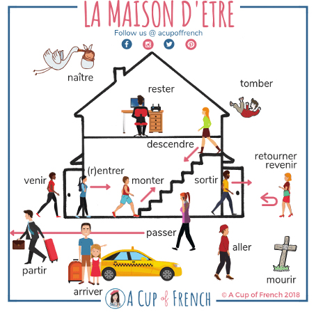

<!DOCTYPE html>
<html lang="fr">
<head>
    <meta charset="UTF-8">
    <meta name="viewport" content="width=device-width, initial-scale=1.0">
    <title>Le passé composé - Module FLE Interactif</title>
    <script crossorigin src="https://unpkg.com/react@18/umd/react.production.min.js"></script>
    <script crossorigin src="https://unpkg.com/react-dom@18/umd/react-dom.production.min.js"></script>
    <script src="https://unpkg.com/@babel/standalone/babel.min.js"></script>
    <script src="https://cdn.tailwindcss.com"></script>
    <link href="https://fonts.googleapis.com/css2?family=Poppins:wght@400;600;700;800&family=Quicksand:wght@400;600;700&display=swap" rel="stylesheet">
    <style>
        * { margin: 0; padding: 0; box-sizing: border-box; }
        body { font-family: 'Poppins', sans-serif; background: linear-gradient(135deg, #667eea 0%, #764ba2 100%); min-height: 100vh; overflow-x: hidden; }
        .serif { font-family: 'Quicksand', sans-serif; }
        
        @keyframes dance {
            0%, 100% { transform: translateY(0) rotate(0deg); }
            25% { transform: translateY(-20px) rotate(-10deg); }
            75% { transform: translateY(-20px) rotate(10deg); }
        }
        .dancing-person { animation: dance 0.6s ease-in-out infinite; display: inline-block; font-size: 4rem; }
        
        @keyframes fadeIn {
            from { opacity: 0; transform: translateY(20px); }
            to { opacity: 1; transform: translateY(0); }
        }
        .fade-in { animation: fadeIn 0.5s ease-out; }
        
        @keyframes confetti-fall {
            0% { transform: translateY(-100vh) rotate(0deg); opacity: 1; }
            100% { transform: translateY(100vh) rotate(720deg); opacity: 0; }
        }
        .confetti { position: fixed; width: 10px; height: 10px; pointer-events: none; z-index: 9999; }
        
        .color-black { color: #000000; }
        .color-blue { color: #3B82F6; }
        .color-red { color: #DC2626; }
        .color-pronoun { color: #ec4899; } /* Rose pour les pronoms compléments */
        .highlight-object { background-color: #fef08a; padding: 2px 6px; border-radius: 4px; font-weight: bold; } /* Jaune pour les objets */
        
        .btn-primary {
            background: linear-gradient(135deg, #667eea 0%, #764ba2 100%);
            color: white;
            padding: 1rem 2rem;
            border-radius: 12px;
            border: none;
            font-weight: 600;
            cursor: pointer;
            transition: all 0.3s ease;
            box-shadow: 0 4px 15px rgba(102, 126, 234, 0.4);
        }
        .btn-primary:hover {
            transform: translateY(-2px);
            box-shadow: 0 6px 20px rgba(102, 126, 234, 0.6);
        }
        .btn-primary:disabled {
            opacity: 0.5;
            cursor: not-allowed;
            transform: none;
        }
        
        .btn-secondary {
            background: white;
            color: #667eea;
            padding: 0.75rem 1.5rem;
            border-radius: 10px;
            border: 2px solid #667eea;
            font-weight: 600;
            cursor: pointer;
            transition: all 0.3s ease;
        }
        .btn-secondary:hover {
            background: #667eea;
            color: white;
        }
        
        .card {
            background: white;
            border-radius: 20px;
            padding: 2rem;
            box-shadow: 0 10px 40px rgba(0, 0, 0, 0.1);
        }
        
        .modal-overlay {
            position: fixed;
            top: 0;
            left: 0;
            right: 0;
            bottom: 0;
            background: rgba(0, 0, 0, 0.7);
            display: flex;
            align-items: center;
            justify-content: center;
            z-index: 1000;
            animation: fadeIn 0.3s ease-out;
        }
        
        .modal-content {
            background: white;
            border-radius: 24px;
            padding: 3rem;
            max-width: 600px;
            width: 90%;
            max-height: 90vh;
            overflow-y: auto;
            animation: fadeIn 0.3s ease-out;
        }
        
        .progress-bar {
            height: 8px;
            background: #e0e0e0;
            border-radius: 10px;
            overflow: hidden;
        }
        
        .progress-fill {
            height: 100%;
            background: linear-gradient(90deg, #667eea 0%, #764ba2 100%);
            transition: width 0.3s ease;
        }
        
        input[type="text"] {
            width: 100%;
            padding: 0.75rem;
            border: 2px solid #e0e0e0;
            border-radius: 10px;
            font-size: 1rem;
            transition: border-color 0.3s;
        }
        input[type="text"]:focus {
            outline: none;
            border-color: #667eea;
        }
        
        .option-btn {
            background: white;
            border: 2px solid #e0e0e0;
            padding: 1rem;
            border-radius: 10px;
            cursor: pointer;
            transition: all 0.3s;
            text-align: left;
            width: 100%;
        }
        .option-btn:hover {
            border-color: #667eea;
            background: #f8f9ff;
        }
        .option-btn.selected {
            border-color: #667eea;
            background: #e8edff;
        }
        .option-btn.correct {
            border-color: #10b981;
            background: #d1fae5;
        }
        .option-btn.incorrect {
            border-color: #ef4444;
            background: #fee2e2;
        }
        
        table {
            width: 100%;
            border-collapse: collapse;
        }
        th, td {
            padding: 1rem;
            text-align: left;
            border-bottom: 1px solid #e0e0e0;
        }
        th {
            font-weight: 600;
            background: #f8f9ff;
        }
        
        @media (max-width: 768px) {
            .card { padding: 1.5rem; }
            .modal-content { padding: 2rem; }
        }
    </style>
</head>
<body>
    <div id="root"></div>
    
    <script type="text/babel">
        const { useState, useEffect } = React;
        
        // Messages d'encouragement
        const ENCOURAGEMENT_MESSAGES = [
            "Bon début ! Mais attention, la suite est plus difficile...",
            "Tu t'en sors bien jusqu'ici. Sauras-tu terminer sans faire d'erreur ?",
            "Pas mal ! Mais garde ta concentration, le plus dur arrive...",
            "C'est un bon score pour l'instant. Pourras-tu maintenir ce niveau ?",
            "Bravo pour tes résultats jusqu'ici ! Prêt(e) à relever le défi jusqu'au bout ?",
            "Tu progresses bien. Mais ne relâche pas ton effort maintenant !",
            "Joli travail ! Montre-moi que tu peux aller jusqu'à la fin...",
            "Ça se passe plutôt bien ! Attention à ne pas te relâcher dans la suite !"
        ];
        
        // Fonction pour créer des confettis
        function createConfetti() {
            const colors = ['#667eea', '#764ba2', '#f59e0b', '#10b981', '#ef4444', '#8b5cf6'];
            const confettiCount = 30;
            
            for (let i = 0; i < confettiCount; i++) {
                const confetti = document.createElement('div');
                confetti.className = 'confetti';
                confetti.style.left = Math.random() * 100 + 'vw';
                confetti.style.background = colors[Math.floor(Math.random() * colors.length)];
                confetti.style.animation = `confetti-fall ${2 + Math.random() * 2}s linear`;
                confetti.style.animationDelay = Math.random() * 0.5 + 's';
                document.body.appendChild(confetti);
                
                setTimeout(() => confetti.remove(), 4000);
            }
        }
        
        // Données des exercices
        const EXERCISE_QUESTIONS = [
            { id: 1, questionBefore: "Hier, j'", questionAfter: " un film.", answer: "ai regardé", verb: "regarder", hint: "auxiliaire + participe passé" },
            { id: 2, questionBefore: "Est-ce que tu ", questionAfter: " à ton ami ?", answer: "as téléphoné", verb: "téléphoner", hint: "auxiliaire + participe passé" },
            { id: 3, questionBefore: "Elle ", questionAfter: " toute la soirée.", answer: "a dansé", verb: "danser", hint: "auxiliaire + participe passé" },
            { id: 4, questionBefore: "Nous ", questionAfter: " le musée dimanche.", answer: "avons visité", verb: "visiter", hint: "auxiliaire + participe passé" },
            { id: 5, questionBefore: "Vous ", questionAfter: " cette semaine.", answer: "avez travaillé", verb: "travailler", hint: "auxiliaire + participe passé", isMidpoint: true },
            { id: 6, questionBefore: "Ils ", questionAfter: " au football.", answer: "ont joué", verb: "jouer", hint: "auxiliaire + participe passé" },
            { id: 7, questionBefore: "Mon frère ", questionAfter: " jusqu'à minuit.", answer: "a étudié", verb: "étudier", hint: "auxiliaire + participe passé" },
            { id: 8, questionBefore: "Les enfants ", questionAfter: " une chanson.", answer: "ont chanté", verb: "chanter", hint: "auxiliaire + participe passé" },
            { id: 9, questionBefore: "Marie ", questionAfter: " le dîner.", answer: "a préparé", verb: "préparer", hint: "auxiliaire + participe passé" },
            { id: 10, questionBefore: "As-tu ", questionAfter: " ton sac ?", answer: "oublié", verb: "oublier", hint: "juste le participe passé", isEndpoint: true }
        ];
        
        
        // Activité 2e groupe (5 verbes)
        const EXERCISE_2ND_GROUP = [
            { id: 1, questionBefore: "J'", questionAfter: " mes devoirs hier soir.", answer: "ai fini", verb: "finir", hint: "auxiliaire + participe en -I" },
            { id: 2, questionBefore: "Tu ", questionAfter: " un bon restaurant.", answer: "as choisi", verb: "choisir", hint: "auxiliaire + participe en -I" },
            { id: 3, questionBefore: "Il ", questionAfter: " son examen.", answer: "a réussi", verb: "réussir", hint: "auxiliaire + participe en -I", isMidpoint: true },
            { id: 4, questionBefore: "Nous ", questionAfter: " à la question.", answer: "avons réfléchi", verb: "réfléchir", hint: "auxiliaire + participe en -I" },
            { id: 5, questionBefore: "Vous ", questionAfter: " le formulaire.", answer: "avez rempli", verb: "remplir", hint: "auxiliaire + participe en -I", isEndpoint: true }
        ];
        
        // Exercice participes en -U
        const EXERCISE_U = [
            { id: 1, questionBefore: "J'", questionAfter: " ce film hier.", answer: "ai vu", verb: "voir", hint: "participe en -U" },
            { id: 2, questionBefore: "Tu ", questionAfter: " venir avec nous.", answer: "as pu", verb: "pouvoir", hint: "participe en -U" },
            { id: 3, questionBefore: "Il ", questionAfter: " partir tôt.", answer: "a voulu", verb: "vouloir", hint: "participe en -U" },
            { id: 4, questionBefore: "Nous ", questionAfter: " comment répondre.", answer: "avons su", verb: "savoir", hint: "participe en -U", isMidpoint: true },
            { id: 5, questionBefore: "Vous ", questionAfter: " ce livre.", answer: "avez lu", verb: "lire", hint: "participe en -U" },
            { id: 6, questionBefore: "Elles ", questionAfter: " du café.", answer: "ont bu", verb: "boire", hint: "participe en -U" },
            { id: 7, questionBefore: "J'", questionAfter: " ton frère hier.", answer: "ai connu", verb: "connaître", hint: "participe en -U" },
            { id: 8, questionBefore: "Il ", questionAfter: " attendre longtemps.", answer: "a dû", verb: "devoir", hint: "participe en -U", isEndpoint: true }
        ];
        
        // Exercice participes en -IS et -IT
        const EXERCISE_IS_IT = [
            { id: 1, questionBefore: "J'", questionAfter: " le bus ce matin.", answer: "ai pris", verb: "prendre", hint: "participe irrégulier" },
            { id: 2, questionBefore: "Tu ", questionAfter: " le français.", answer: "as appris", verb: "apprendre", hint: "participe irrégulier" },
            { id: 3, questionBefore: "Elle ", questionAfter: " la leçon.", answer: "a compris", verb: "comprendre", hint: "participe irrégulier" },
            { id: 4, questionBefore: "Nous ", questionAfter: " nos livres sur la table.", answer: "avons mis", verb: "mettre", hint: "participe irrégulier" },
            { id: 5, questionBefore: "Vous ", questionAfter: " une lettre.", answer: "avez écrit", verb: "écrire", hint: "participe irrégulier", isMidpoint: true },
            { id: 6, questionBefore: "Ils ", questionAfter: " la vérité.", answer: "ont dit", verb: "dire", hint: "participe irrégulier" },
            { id: 7, questionBefore: "J'", questionAfter: " mes devoirs.", answer: "ai fait", verb: "faire", hint: "participe irrégulier" },
            { id: 8, questionBefore: "Elle ", questionAfter: " aux enfants d'entrer.", answer: "a permis", verb: "permettre", hint: "participe irrégulier" },
            { id: 9, questionBefore: "Tu ", questionAfter: " ton nouveau travail.", answer: "as repris", verb: "reprendre", hint: "participe irrégulier" },
            { id: 10, questionBefore: "Nous ", questionAfter: " un message.", answer: "avons transmis", verb: "transmettre", hint: "participe irrégulier", isEndpoint: true }
        ];
        
        // Exercice tous les irréguliers
        const EXERCISE_ALL_IRREGULAR = [
            { id: 1, questionBefore: "J'", questionAfter: " la porte.", answer: "ai ouvert", verb: "ouvrir", hint: "participe en -ERT" },
            { id: 2, questionBefore: "Tu ", questionAfter: " un cadeau.", answer: "as offert", verb: "offrir", hint: "participe en -ERT" },
            { id: 3, questionBefore: "Il ", questionAfter: " en 1990.", answer: "est né", verb: "naître", hint: "auxiliaire ÊTRE" },
            { id: 4, questionBefore: "Elle ", questionAfter: " malade hier.", answer: "a été", verb: "être", hint: "très irrégulier" },
            { id: 5, questionBefore: "Nous ", questionAfter: " de la chance.", answer: "avons eu", verb: "avoir", hint: "très irrégulier" },
            { id: 6, questionBefore: "Vous ", questionAfter: " ce problème.", answer: "avez résolu", verb: "résoudre", hint: "participe en -U", isMidpoint: true },
            { id: 7, questionBefore: "Ils ", questionAfter: " un nouveau restaurant.", answer: "ont découvert", verb: "découvrir", hint: "participe en -ERT" },
            { id: 8, questionBefore: "J'", questionAfter: " toute la journée.", answer: "ai souffert", verb: "souffrir", hint: "participe en -ERT" },
            { id: 9, questionBefore: "Tu ", questionAfter: " cette information.", answer: "as reçu", verb: "recevoir", hint: "participe en -U" },
            { id: 10, questionBefore: "Elle ", questionAfter: " son ami.", answer: "a reconnu", verb: "reconnaître", hint: "participe en -U" },
            { id: 11, questionBefore: "Nous ", questionAfter: " le projet.", answer: "avons produit", verb: "produire", hint: "participe en -IT" },
            { id: 12, questionBefore: "Ils ", questionAfter: " en 2000.", answer: "sont morts", verb: "mourir", hint: "auxiliaire ÊTRE", isEndpoint: true }
        ];
        
        // Activité verbes de la maison d'être
        const EXERCISE_MAISON_ETRE = [
            { id: 1, questionBefore: "Hier, je ", questionAfter: " au cinéma.", acceptedAnswers: ["suis allé", "suis allée"], verb: "aller", hint: "auxiliaire ÊTRE" },
            { id: 2, questionBefore: "Tu ", questionAfter: " me voir ce matin.", acceptedAnswers: ["es venu", "es venue"], verb: "venir", hint: "auxiliaire ÊTRE" },
            { id: 3, questionBefore: "Il ", questionAfter: " tôt ce matin.", acceptedAnswers: ["est parti"], verb: "partir", hint: "auxiliaire ÊTRE" },
            { id: 4, questionBefore: "Elle ", questionAfter: " hier soir.", acceptedAnswers: ["est arrivée"], verb: "arriver", hint: "auxiliaire ÊTRE", isMidpoint: true },
            { id: 5, questionBefore: "Nous ", questionAfter: " ensemble.", acceptedAnswers: ["sommes sortis", "sommes sorties"], verb: "sortir", hint: "auxiliaire ÊTRE" },
            { id: 6, questionBefore: "Vous ", questionAfter: " à la maison.", acceptedAnswers: ["êtes restés", "êtes restées"], verb: "rester", hint: "auxiliaire ÊTRE" },
            { id: 7, questionBefore: "Ils ", questionAfter: " au deuxième étage.", acceptedAnswers: ["sont montés"], verb: "monter", hint: "auxiliaire ÊTRE" },
            { id: 8, questionBefore: "Elles ", questionAfter: " dans le jardin.", acceptedAnswers: ["sont tombées"], verb: "tomber", hint: "auxiliaire ÊTRE", isEndpoint: true }
        ];
        
        // Activité verbes pronominaux
        const EXERCISE_PRONOMINAUX = [
            { id: 1, questionBefore: "Ce matin, je ", questionAfter: " à 7h.", acceptedAnswers: ["me suis levé", "me suis levée"], verb: "se lever", hint: "auxiliaire ÊTRE + pronominal" },
            { id: 2, questionBefore: "Tu ", questionAfter: " les mains.", acceptedAnswers: ["t'es lavé", "t'es lavée"], verb: "se laver", hint: "auxiliaire ÊTRE + pronominal" },
            { id: 3, questionBefore: "Il ", questionAfter: " tard hier soir.", acceptedAnswers: ["s'est couché"], verb: "se coucher", hint: "auxiliaire ÊTRE + pronominal" },
            { id: 4, questionBefore: "Elle ", questionAfter: " rapidement.", acceptedAnswers: ["s'est habillée"], verb: "s'habiller", hint: "auxiliaire ÊTRE + pronominal", isMidpoint: true },
            { id: 5, questionBefore: "Nous ", questionAfter: " ensemble.", acceptedAnswers: ["nous sommes préparés", "nous sommes préparées"], verb: "se préparer", hint: "auxiliaire ÊTRE + pronominal" },
            { id: 6, questionBefore: "Vous ", questionAfter: " à quelle heure.", acceptedAnswers: ["vous êtes réveillés", "vous êtes réveillées"], verb: "se réveiller", hint: "auxiliaire ÊTRE + pronominal" },
            { id: 7, questionBefore: "Ils ", questionAfter: " beaucoup.", acceptedAnswers: ["se sont amusés"], verb: "s'amuser", hint: "auxiliaire ÊTRE + pronominal" },
            { id: 8, questionBefore: "Elles ", questionAfter: " au parc.", acceptedAnswers: ["se sont promenées"], verb: "se promener", hint: "auxiliaire ÊTRE + pronominal", isEndpoint: true }
        ];
        
        // Activité tous les verbes ÊTRE
        const EXERCISE_TOUS_ETRE = [
            { id: 1, questionBefore: "Hier, je ", questionAfter: " au marché.", acceptedAnswers: ["suis allé", "suis allée"], verb: "aller", hint: "verbe de la maison - sans objet" },
            { id: 2, questionBefore: "Tu ", questionAfter: " tôt ce matin.", acceptedAnswers: ["t'es levé", "t'es levée"], verb: "se lever", hint: "verbe pronominal" },
            { id: 3, questionBefore: "Il ", questionAfter: " en 1990.", acceptedAnswers: ["est né"], verb: "naître", hint: "verbe de la maison" },
            { id: 4, questionBefore: "J'", questionAfter: " les valises au grenier.", acceptedAnswers: ["ai monté"], verb: "monter", hint: "verbe avec objet → AVOIR" },
            { id: 5, questionBefore: "Nous ", questionAfter: " ensemble.", acceptedAnswers: ["nous sommes promenés", "nous sommes promenées"], verb: "se promener", hint: "verbe pronominal", isMidpoint: true },
            { id: 6, questionBefore: "Je ", questionAfter: " rapidement.", acceptedAnswers: ["suis descendu", "suis descendue"], verb: "descendre", hint: "verbe de la maison - sans objet" },
            { id: 7, questionBefore: "Elle ", questionAfter: " le chien dans le jardin.", acceptedAnswers: ["a sorti"], verb: "sortir", hint: "verbe avec objet → AVOIR" },
            { id: 8, questionBefore: "Ils ", questionAfter: " hier.", acceptedAnswers: ["sont arrivés"], verb: "arriver", hint: "verbe de la maison" },
            { id: 9, questionBefore: "Vous ", questionAfter: " la poubelle.", acceptedAnswers: ["avez descendu"], verb: "descendre", hint: "verbe avec objet → AVOIR" },
            { id: 10, questionBefore: "Tu ", questionAfter: " dans l'escalier.", acceptedAnswers: ["es tombé", "es tombée"], verb: "tomber", hint: "verbe de la maison", isEndpoint: true }
        ];
        
        // Activité accords avec ÊTRE
        const EXERCISE_ACCORDS_ETRE = [
            { id: 1, questionBefore: "Marie ", questionAfter: " au marché.", answer: "est allée", verb: "aller", hint: "féminin singulier → -ée" },
            { id: 2, questionBefore: "Paul ", questionAfter: " tôt ce matin.", answer: "est parti", verb: "partir", hint: "masculin singulier → -i" },
            { id: 3, questionBefore: "Les filles ", questionAfter: " ensemble.", answer: "sont sorties", verb: "sortir", hint: "féminin pluriel → -ies" },
            { id: 4, questionBefore: "Les garçons ", questionAfter: " rapidement.", answer: "se sont préparés", verb: "se préparer", hint: "masculin pluriel → -és" },
            { id: 5, questionBefore: "Ma mère ", questionAfter: " hier.", answer: "est arrivée", verb: "arriver", hint: "féminin singulier → -ée", isMidpoint: true },
            { id: 6, questionBefore: "Mon père ", questionAfter: " à la maison.", answer: "est resté", verb: "rester", hint: "masculin singulier → -é" },
            { id: 7, questionBefore: "Mes sœurs ", questionAfter: " à 7h.", answer: "se sont levées", verb: "se lever", hint: "féminin pluriel → -ées" },
            { id: 8, questionBefore: "Tes frères ", questionAfter: " au parc.", answer: "sont allés", verb: "aller", hint: "masculin pluriel → -és" },
            { id: 9, questionBefore: "Sophie ", questionAfter: " dans l'escalier.", answer: "est tombée", verb: "tomber", hint: "féminin singulier → -ée" },
            { id: 10, questionBefore: "Marc ", questionAfter: " en 1990.", answer: "est né", verb: "naître", hint: "masculin singulier → -é", isEndpoint: true }
        ];
        
        // Activité finale mélange AVOIR et ÊTRE
        const EXERCISE_MELANGE_FINAL = [
            { id: 1, questionBefore: "Nous ", questionAfter: " ensemble.", acceptedAnswers: ["avons mangé"], verb: "manger", hint: "auxiliaire AVOIR" },
            { id: 2, questionBefore: "Elles ", questionAfter: " au cinéma.", acceptedAnswers: ["sont allées"], verb: "aller", hint: "auxiliaire ÊTRE + féminin pluriel" },
            { id: 3, questionBefore: "J'", questionAfter: " mes devoirs.", acceptedAnswers: ["ai fini"], verb: "finir", hint: "auxiliaire AVOIR" },
            { id: 4, questionBefore: "Tu (féminin) ", questionAfter: " tôt.", acceptedAnswers: ["t'es levée"], verb: "se lever", hint: "auxiliaire ÊTRE + féminin" },
            { id: 5, questionBefore: "Il ", questionAfter: " son examen.", acceptedAnswers: ["a réussi"], verb: "réussir", hint: "auxiliaire AVOIR" },
            { id: 6, questionBefore: "Elle ", questionAfter: " hier soir.", acceptedAnswers: ["est arrivée"], verb: "arriver", hint: "auxiliaire ÊTRE + féminin", isMidpoint: true },
            { id: 7, questionBefore: "Vous ", questionAfter: " ce livre.", acceptedAnswers: ["avez lu"], verb: "lire", hint: "auxiliaire AVOIR" },
            { id: 8, questionBefore: "Ils ", questionAfter: " dans le jardin.", acceptedAnswers: ["sont tombés"], verb: "tomber", hint: "auxiliaire ÊTRE + masculin pluriel" },
            { id: 9, questionBefore: "Nous ", questionAfter: " du café.", acceptedAnswers: ["avons bu"], verb: "boire", hint: "auxiliaire AVOIR" },
            { id: 10, questionBefore: "Mes amies (féminin) ", questionAfter: " rapidement.", acceptedAnswers: ["se sont préparées"], verb: "se préparer", hint: "auxiliaire ÊTRE + féminin pluriel" },
            { id: 11, questionBefore: "Tu ", questionAfter: " la vérité.", acceptedAnswers: ["as dit"], verb: "dire", hint: "auxiliaire AVOIR" },
            { id: 12, questionBefore: "Paul et Marc ", questionAfter: " ensemble.", acceptedAnswers: ["sont sortis"], verb: "sortir", hint: "auxiliaire ÊTRE + masculin pluriel", isEndpoint: true }
        ];
        
        // Révision générale - 20 questions mélangeant tout
        const EXERCISE_REVISION = [
            { id: 1, questionBefore: "Hier, j'", questionAfter: " un film.", answer: "ai regardé", verb: "regarder", hint: "1er groupe + AVOIR" },
            { id: 2, questionBefore: "Elle ", questionAfter: " au marché.", answer: "est allée", verb: "aller", hint: "verbe de la maison + féminin" },
            { id: 3, questionBefore: "Nous ", questionAfter: " nos devoirs.", answer: "avons fini", verb: "finir", hint: "2e groupe + AVOIR" },
            { id: 4, questionBefore: "Tu (féminin) ", questionAfter: " tôt.", answer: "t'es levée", verb: "se lever", hint: "pronominal + féminin" },
            { id: 5, questionBefore: "Il ", questionAfter: " ce livre.", answer: "a lu", verb: "lire", hint: "irrégulier en -U + AVOIR", isMidpoint: true },
            { id: 6, questionBefore: "Elles ", questionAfter: " en retard.", answer: "sont arrivées", verb: "arriver", hint: "verbe de la maison + féminin pluriel" },
            { id: 7, questionBefore: "J'", questionAfter: " le bus.", answer: "ai pris", verb: "prendre", hint: "irrégulier en -IS + AVOIR" },
            { id: 8, questionBefore: "Vous (masculin) ", questionAfter: " rapidement.", answer: "vous êtes habillés", verb: "s'habiller", hint: "pronominal + masculin pluriel" },
            { id: 9, questionBefore: "Elle ", questionAfter: " une lettre.", answer: "a écrit", verb: "écrire", hint: "irrégulier en -IT + AVOIR" },
            { id: 10, questionBefore: "Ils ", questionAfter: " la porte.", answer: "ont ouvert", verb: "ouvrir", hint: "irrégulier en -ERT + AVOIR", isMidpoint: true },
            { id: 11, questionBefore: "Tu ", questionAfter: " les valises au grenier.", answer: "as monté", verb: "monter", hint: "verbe avec objet → AVOIR" },
            { id: 12, questionBefore: "Nous (féminin) ", questionAfter: " au cinéma.", answer: "sommes allées", verb: "aller", hint: "verbe de la maison + féminin pluriel" },
            { id: 13, questionBefore: "Il ", questionAfter: " son examen.", answer: "a réussi", verb: "réussir", hint: "2e groupe + AVOIR" },
            { id: 14, questionBefore: "Je (masculin) ", questionAfter: " rapidement.", answer: "suis descendu", verb: "descendre", hint: "verbe de la maison - sans objet" },
            { id: 15, questionBefore: "Elles ", questionAfter: " toute la journée.", answer: "se sont promenées", verb: "se promener", hint: "pronominal + féminin pluriel", isMidpoint: true },
            { id: 16, questionBefore: "Vous ", questionAfter: " la poubelle.", answer: "avez descendu", verb: "descendre", hint: "verbe avec objet → AVOIR" },
            { id: 17, questionBefore: "J'", questionAfter: " la vérité.", answer: "ai dit", verb: "dire", hint: "irrégulier en -IT + AVOIR" },
            { id: 18, questionBefore: "Marie ", questionAfter: " en 1995.", answer: "est née", verb: "naître", hint: "verbe de la maison + féminin" },
            { id: 19, questionBefore: "Nous ", questionAfter: " du café.", answer: "avons bu", verb: "boire", hint: "irrégulier en -U + AVOIR" },
            { id: 20, questionBefore: "Les enfants ", questionAfter: " dans le jardin.", answer: "se sont amusés", verb: "s'amuser", hint: "pronominal + masculin pluriel", isEndpoint: true }
        ];
        
        // Slides du tutoriel
        const TUTORIAL_SLIDES = [
            // Slide 1
            {
                title: "Le passé composé",
                content: (
                    <div className="space-y-6">
                        <h1 className="text-5xl font-bold text-center bg-gradient-to-r from-purple-600 to-pink-600 bg-clip-text text-transparent">
                            Le passé composé
                        </h1>
                        <p className="text-2xl text-center text-gray-600 serif">
                            Raconter une action dans le passé
                        </p>
                        <div className="text-center mt-8">
                            <div className="inline-block bg-purple-100 rounded-full p-8">
                                <span className="text-6xl">📚</span>
                            </div>
                        </div>
                    </div>
                )
            },
            // Slide 2
            {
                title: "Un exemple",
                content: (
                    <div className="space-y-4">
                        <div className="bg-blue-50 p-6 rounded-xl serif text-lg">
                            <p className="mb-4">
                                Ce matin, je <strong><span className="color-pronoun">me</span> suis levé</strong> à 7h. J'<strong>ai préparé</strong> mon petit déjeuner 
                                et ma femme <strong>a pris</strong> sa douche. Après, nous <strong>avons mangé</strong> ensemble et elle <strong>est partie</strong> au bureau.
                            </p>
                        </div>
                        <div className="grid grid-cols-2 gap-4 mt-6">
                            <div className="bg-green-50 p-4 rounded-lg text-center">
                                <p className="font-semibold mb-2">Manger seul 😔</p>
                                <div className="text-4xl">🍽️</div>
                            </div>
                            <div className="bg-pink-50 p-4 rounded-lg text-center">
                                <p className="font-semibold mb-2">Manger ensemble 😊</p>
                                <div className="text-4xl">👫🍽️</div>
                            </div>
                        </div>
                    </div>
                )
            },
            // Slide 3
            {
                title: "À quoi ça sert ?",
                content: (
                    <div className="space-y-6">
                        <p className="text-lg serif">
                            Le passé composé sert à <strong>donner des faits dans le passé</strong>, 
                            pour des actions ponctuelles, qui ne durent pas et qui sont terminées quand on parle.
                        </p>
                        <div className="bg-yellow-50 p-6 rounded-xl space-y-3">
                            <p className="flex items-start">
                                <span className="text-2xl mr-3">✓</span>
                                <span className="serif text-lg">Je <span className="color-pronoun">me</span> suis levé à 7h.</span>
                            </p>
                            <p className="flex items-start">
                                <span className="text-2xl mr-3">✓</span>
                                <span className="serif text-lg">J'ai préparé mon petit déjeuner.</span>
                            </p>
                            <p className="flex items-start">
                                <span className="text-2xl mr-3">✓</span>
                                <span className="serif text-lg">Ce matin, nous avons mangé ensemble.</span>
                            </p>
                        </div>
                        <div className="bg-purple-50 p-6 rounded-xl mt-6">
                            <p className="font-semibold mb-3 text-lg">Le passé composé impose un avant/après, un changement :</p>
                            <div className="bg-white p-4 rounded-lg serif text-center text-lg">
                                <p className="text-gray-600">J'étais couché.</p>
                                <p className="text-2xl my-2">👇</p>
                                <p className="font-bold text-purple-700">Je <span className="color-pronoun">me</span> suis levé.</p>
                                <p className="text-2xl my-2">👇</p>
                                <p className="text-gray-600">J'étais debout.</p>
                            </div>
                            <p className="mt-4 text-center font-semibold text-purple-800">
                                La situation est toujours différente après le passé composé.
                            </p>
                        </div>
                    </div>
                )
            },
            // Slide 4 - NOUVEAU : 3 exemples d'avant/après
            {
                title: "Avant / Après : des exemples",
                content: (
                    <div className="space-y-6">
                        <p className="text-lg font-semibold text-center mb-6">Le passé composé marque toujours un changement :</p>
                        
                        <div className="bg-blue-50 p-6 rounded-xl">
                            <div className="grid grid-cols-3 gap-4 text-center">
                                <div className="bg-white p-4 rounded-lg">
                                    <p className="text-sm text-gray-600 mb-2">AVANT</p>
                                    <p className="serif text-lg">J'étais à la maison.</p>
                                    <div className="text-3xl my-2">🏠</div>
                                </div>
                                <div className="bg-purple-100 p-4 rounded-lg">
                                    <p className="text-sm font-bold text-purple-700 mb-2">ACTION</p>
                                    <p className="serif text-lg font-bold">Je suis sorti.</p>
                                    <div className="text-3xl my-2">🚶</div>
                                </div>
                                <div className="bg-white p-4 rounded-lg">
                                    <p className="text-sm text-gray-600 mb-2">APRÈS</p>
                                    <p className="serif text-lg">J'étais dehors.</p>
                                    <div className="text-3xl my-2">🌳</div>
                                </div>
                            </div>
                        </div>
                        
                        <div className="bg-green-50 p-6 rounded-xl">
                            <div className="grid grid-cols-3 gap-4 text-center">
                                <div className="bg-white p-4 rounded-lg">
                                    <p className="text-sm text-gray-600 mb-2">AVANT</p>
                                    <p className="serif text-lg">La porte était fermée.</p>
                                    <div className="text-3xl my-2">🚪</div>
                                </div>
                                <div className="bg-purple-100 p-4 rounded-lg">
                                    <p className="text-sm font-bold text-purple-700 mb-2">ACTION</p>
                                    <p className="serif text-lg font-bold">J'ai ouvert la porte.</p>
                                    <div className="text-3xl my-2">🔓</div>
                                </div>
                                <div className="bg-white p-4 rounded-lg">
                                    <p className="text-sm text-gray-600 mb-2">APRÈS</p>
                                    <p className="serif text-lg">La porte était ouverte.</p>
                                    <div className="text-3xl my-2">🚪✨</div>
                                </div>
                            </div>
                        </div>
                        
                        <div className="bg-pink-50 p-6 rounded-xl">
                            <div className="grid grid-cols-3 gap-4 text-center">
                                <div className="bg-white p-4 rounded-lg">
                                    <p className="text-sm text-gray-600 mb-2">AVANT</p>
                                    <p className="serif text-lg">Ils étaient tristes.</p>
                                    <div className="text-3xl my-2">😢</div>
                                </div>
                                <div className="bg-purple-100 p-4 rounded-lg">
                                    <p className="text-sm font-bold text-purple-700 mb-2">ACTION</p>
                                    <p className="serif text-lg font-bold">Ils ont ri.</p>
                                    <div className="text-3xl my-2">😂</div>
                                </div>
                                <div className="bg-white p-4 rounded-lg">
                                    <p className="text-sm text-gray-600 mb-2">APRÈS</p>
                                    <p className="serif text-lg">Ils étaient contents.</p>
                                    <div className="text-3xl my-2">😊</div>
                                </div>
                            </div>
                        </div>
                    </div>
                )
            },
            // Slide 5 - Exemples avec AVOIR (1er groupe)
            {
                title: "Des exemples avec l'auxiliaire avoir",
                content: (
                    <div className="space-y-6">
                        <p className="text-xl font-semibold text-center mb-4">Voici plusieurs exemples de phrases au passé composé :</p>
                        
                        <div className="bg-gradient-to-r from-blue-50 to-purple-50 p-6 rounded-xl space-y-4">
                            <p className="serif text-lg">
                                J'<span className="color-blue font-bold">ai</span> <span className="color-red font-bold">regardé</span> la télévision.
                            </p>
                            <p className="serif text-lg">
                                Tu <span className="color-blue font-bold">as</span> <span className="color-red font-bold">écouté</span> de la musique.
                            </p>
                            <p className="serif text-lg">
                                Il <span className="color-blue font-bold">a</span> <span className="color-red font-bold">parlé</span> avec son professeur.
                            </p>
                            <p className="serif text-lg">
                                Elle <span className="color-blue font-bold">a</span> <span className="color-red font-bold">cherché</span> ses clés.
                            </p>
                            <p className="serif text-lg">
                                Nous <span className="color-blue font-bold">avons</span> <span className="color-red font-bold">marché</span> dans le parc.
                            </p>
                            <p className="serif text-lg">
                                Vous <span className="color-blue font-bold">avez</span> <span className="color-red font-bold">mangé</span> au restaurant.
                            </p>
                            <p className="serif text-lg">
                                Ils <span className="color-blue font-bold">ont</span> <span className="color-red font-bold">joué</span> aux cartes.
                            </p>
                            <p className="serif text-lg">
                                Elles <span className="color-blue font-bold">ont</span> <span className="color-red font-bold">dansé</span> toute la nuit.
                            </p>
                        </div>
                        
                        <div className="bg-yellow-50 p-4 rounded-lg">
                            <p className="text-center font-semibold text-gray-700">
                                👀 Remarque bien les <span className="color-blue">auxiliaires</span> et les <span className="color-red">participes passés</span> !
                            </p>
                        </div>
                    </div>
                )
            },
            // Slide 6 - ACTIVITÉ INTERACTIF (10 verbes 1er groupe)
            {
                title: "Activité : À toi de jouer !",
                isExercise: true
            },
            // Slide 7 - Correction + explication -ER → -É
            {
                title: "Les verbes du premier groupe (-ER)",
                content: (
                    <div className="space-y-6">
                        <div className="bg-green-50 p-6 rounded-xl">
                            <p className="text-lg font-semibold mb-4">✅ Correction de l'exercice :</p>
                            <div className="space-y-2 serif">
                                <p>1. Hier, j'<span className="color-blue font-bold">ai</span> <span className="color-red font-bold">regardé</span> un film.</p>
                                <p>2. Est-ce que tu <span className="color-blue font-bold">as</span> <span className="color-red font-bold">téléphoné</span> à ton ami ?</p>
                                <p>3. Elle <span className="color-blue font-bold">a</span> <span className="color-red font-bold">dansé</span> toute la soirée.</p>
                                <p>4. Nous <span className="color-blue font-bold">avons</span> <span className="color-red font-bold">visité</span> le musée dimanche.</p>
                                <p>5. Vous <span className="color-blue font-bold">avez</span> <span className="color-red font-bold">travaillé</span> cette semaine.</p>
                                <p>6. Ils <span className="color-blue font-bold">ont</span> <span className="color-red font-bold">joué</span> au football.</p>
                                <p>7. Mon frère <span className="color-blue font-bold">a</span> <span className="color-red font-bold">étudié</span> jusqu'à minuit.</p>
                                <p>8. Les enfants <span className="color-blue font-bold">ont</span> <span className="color-red font-bold">chanté</span> une chanson.</p>
                                <p>9. Marie <span className="color-blue font-bold">a</span> <span className="color-red font-bold">préparé</span> le dîner.</p>
                                <p>10. <span className="color-blue font-bold">As</span>-tu <span className="color-red font-bold">oublié</span> ton sac ?</p>
                            </div>
                        </div>
                        
                        <div className="bg-purple-50 p-6 rounded-xl">
                            <p className="text-xl font-semibold mb-4 text-center">
                                📝 Nous avons travaillé seulement avec le premier groupe : les verbes en <strong style={{color: '#10b981'}}>-ER</strong>
                            </p>
                            <p className="text-lg mb-4 text-center">
                                Le <span className="color-red font-bold text-xl">participe passé</span> est toujours en <strong style={{color: '#8b5cf6', fontSize: '1.5rem'}}>-É</strong>
                            </p>
                            <div className="bg-white p-6 rounded-lg space-y-3">
                                <p className="serif text-lg">regard<span style={{color: '#10b981', fontWeight: 'bold'}}>er</span> → regard<span style={{color: '#8b5cf6', fontWeight: 'bold'}}>é</span></p>
                                <p className="serif text-lg">dans<span style={{color: '#10b981', fontWeight: 'bold'}}>er</span> → dans<span style={{color: '#8b5cf6', fontWeight: 'bold'}}>é</span></p>
                                <p className="serif text-lg">visit<span style={{color: '#10b981', fontWeight: 'bold'}}>er</span> → visit<span style={{color: '#8b5cf6', fontWeight: 'bold'}}>é</span></p>
                                <p className="serif text-lg">travaill<span style={{color: '#10b981', fontWeight: 'bold'}}>er</span> → travaill<span style={{color: '#8b5cf6', fontWeight: 'bold'}}>é</span></p>
                                <p className="serif text-lg">prépar<span style={{color: '#10b981', fontWeight: 'bold'}}>er</span> → prépar<span style={{color: '#8b5cf6', fontWeight: 'bold'}}>é</span></p>
                            </div>
                        </div>
                    </div>
                )
            },
            // Slide 8 - Les verbes du 2e groupe (-IR)
            {
                title: "Les verbes du deuxième groupe (-IR)",
                content: (
                    <div className="space-y-6">
                        <div className="bg-blue-50 p-6 rounded-xl">
                            <p className="text-xl font-semibold mb-4 text-center">
                                📝 Les verbes du deuxième groupe : les verbes en <strong style={{color: '#10b981'}}>-IR</strong> qui se conjuguent en <strong style={{color: '#f59e0b'}}>-ISSONS</strong> avec "nous" au présent
                            </p>
                            <div className="bg-white p-6 rounded-lg space-y-4 mt-4">
                                <div className="flex items-center justify-center gap-4">
                                    <div className="text-center">
                                        <p className="serif text-lg mb-2"><strong>finir</strong> : nous fin<span style={{color: '#f59e0b', fontWeight: 'bold'}}>issons</span></p>
                                        <p className="text-green-600 font-semibold">→ 2ème groupe ✓</p>
                                    </div>
                                    <div className="text-4xl">✓</div>
                                </div>
                                <div className="flex items-center justify-center gap-4">
                                    <div className="text-center">
                                        <p className="serif text-lg mb-2"><strong>dormir</strong> : nous dormons</p>
                                        <p className="text-red-600 font-semibold">→ 3ème groupe ✗</p>
                                    </div>
                                    <div className="text-4xl">✗</div>
                                </div>
                            </div>
                        </div>
                        
                        <div className="bg-purple-50 p-6 rounded-xl">
                            <p className="text-lg mb-4 text-center">
                                Le <span className="color-red font-bold text-xl">participe passé</span> est toujours en <strong style={{color: '#8b5cf6', fontSize: '1.5rem'}}>-I</strong>
                            </p>
                        </div>
                        
                        <div className="bg-gradient-to-r from-blue-50 to-purple-50 p-6 rounded-xl space-y-4">
                            <p className="text-xl font-semibold mb-4 text-center">Voici 8 exemples :</p>
                            <p className="serif text-lg">
                                J'<span className="color-blue font-bold">ai</span> <span className="color-red font-bold">fini</span> mes devoirs.
                            </p>
                            <p className="serif text-lg">
                                Tu <span className="color-blue font-bold">as</span> <span className="color-red font-bold">choisi</span> un restaurant.
                            </p>
                            <p className="serif text-lg">
                                Il <span className="color-blue font-bold">a</span> <span className="color-red font-bold">réussi</span> son examen.
                            </p>
                            <p className="serif text-lg">
                                Elle <span className="color-blue font-bold">a</span> <span className="color-red font-bold">réfléchi</span> à la question.
                            </p>
                            <p className="serif text-lg">
                                Nous <span className="color-blue font-bold">avons</span> <span className="color-red font-bold">rempli</span> le formulaire.
                            </p>
                            <p className="serif text-lg">
                                Vous <span className="color-blue font-bold">avez</span> <span className="color-red font-bold">obéi</span> aux règles.
                            </p>
                            <p className="serif text-lg">
                                Ils <span className="color-blue font-bold">ont</span> <span className="color-red font-bold">grandi</span> rapidement.
                            </p>
                            <p className="serif text-lg">
                                Les spectateurs <span className="color-blue font-bold">ont</span> <span className="color-red font-bold">applaudi</span> longtemps.
                            </p>
                        </div>
                        
                        <div className="bg-purple-50 p-6 rounded-xl">
                            <p className="text-lg mb-4 text-center font-semibold">
                                La règle : <span style={{color: '#10b981'}}>-IR</span> + <span style={{color: '#f59e0b'}}>-ISSONS</span> au présent → <span style={{color: '#8b5cf6'}}>-I</span>
                            </p>
                            <div className="bg-white p-6 rounded-lg space-y-3">
                                <p className="serif text-lg">fin<span style={{color: '#10b981', fontWeight: 'bold'}}>ir</span> → fin<span style={{color: '#8b5cf6', fontWeight: 'bold'}}>i</span></p>
                                <p className="serif text-lg">chois<span style={{color: '#10b981', fontWeight: 'bold'}}>ir</span> → chois<span style={{color: '#8b5cf6', fontWeight: 'bold'}}>i</span></p>
                                <p className="serif text-lg">réuss<span style={{color: '#10b981', fontWeight: 'bold'}}>ir</span> → réuss<span style={{color: '#8b5cf6', fontWeight: 'bold'}}>i</span></p>
                                <p className="serif text-lg">réfléch<span style={{color: '#10b981', fontWeight: 'bold'}}>ir</span> → réfléch<span style={{color: '#8b5cf6', fontWeight: 'bold'}}>i</span></p>
                            </div>
                        </div>
                    </div>
                )
            },
            // Slide 9 - Avant/Après avec les 4 premiers verbes du 2e groupe
            {
                title: "Avant / Après avec les verbes en -IR",
                content: (
                    <div className="space-y-6">
                        <p className="text-lg font-semibold text-center mb-6">Le passé composé marque toujours un changement :</p>
                        
                        <div className="space-y-4">
                            <div className="bg-blue-50 p-6 rounded-xl">
                                <div className="grid grid-cols-3 gap-4 text-center">
                                    <div className="bg-white p-4 rounded-lg">
                                        <p className="text-sm text-gray-600 mb-2">AVANT</p>
                                        <p className="serif text-base">J'avais des devoirs à faire.</p>
                                        <div className="text-3xl my-2">📚❌</div>
                                    </div>
                                    <div className="bg-purple-100 p-4 rounded-lg">
                                        <p className="text-sm font-bold text-purple-700 mb-2">ACTION</p>
                                        <p className="serif text-base font-bold">J'ai fini mes devoirs.</p>
                                        <div className="text-3xl my-2">✍️</div>
                                    </div>
                                    <div className="bg-white p-4 rounded-lg">
                                        <p className="text-sm text-gray-600 mb-2">APRÈS</p>
                                        <p className="serif text-base">Je n'avais plus de devoirs.</p>
                                        <div className="text-3xl my-2">📚✅</div>
                                    </div>
                                </div>
                            </div>
                            
                            <div className="bg-green-50 p-6 rounded-xl">
                                <div className="grid grid-cols-3 gap-4 text-center">
                                    <div className="bg-white p-4 rounded-lg">
                                        <p className="text-sm text-gray-600 mb-2">AVANT</p>
                                        <p className="serif text-base">Tu ne savais pas où manger.</p>
                                        <div className="text-3xl my-2">🤔</div>
                                    </div>
                                    <div className="bg-purple-100 p-4 rounded-lg">
                                        <p className="text-sm font-bold text-purple-700 mb-2">ACTION</p>
                                        <p className="serif text-base font-bold">Tu as choisi un restaurant.</p>
                                        <div className="text-3xl my-2">👉🍽️</div>
                                    </div>
                                    <div className="bg-white p-4 rounded-lg">
                                        <p className="text-sm text-gray-600 mb-2">APRÈS</p>
                                        <p className="serif text-base">Tu savais où aller.</p>
                                        <div className="text-3xl my-2">😊🍽️</div>
                                    </div>
                                </div>
                            </div>
                            
                            <div className="bg-pink-50 p-6 rounded-xl">
                                <div className="grid grid-cols-3 gap-4 text-center">
                                    <div className="bg-white p-4 rounded-lg">
                                        <p className="text-sm text-gray-600 mb-2">AVANT</p>
                                        <p className="serif text-base">Il était stressé.</p>
                                        <div className="text-3xl my-2">😰</div>
                                    </div>
                                    <div className="bg-purple-100 p-4 rounded-lg">
                                        <p className="text-sm font-bold text-purple-700 mb-2">ACTION</p>
                                        <p className="serif text-base font-bold">Il a réussi son examen.</p>
                                        <div className="text-3xl my-2">📝✅</div>
                                    </div>
                                    <div className="bg-white p-4 rounded-lg">
                                        <p className="text-sm text-gray-600 mb-2">APRÈS</p>
                                        <p className="serif text-base">Il était content.</p>
                                        <div className="text-3xl my-2">😃🎉</div>
                                    </div>
                                </div>
                            </div>
                            
                            <div className="bg-yellow-50 p-6 rounded-xl">
                                <div className="grid grid-cols-3 gap-4 text-center">
                                    <div className="bg-white p-4 rounded-lg">
                                        <p className="text-sm text-gray-600 mb-2">AVANT</p>
                                        <p className="serif text-base">Elle ne savait pas la réponse.</p>
                                        <div className="text-3xl my-2">❓</div>
                                    </div>
                                    <div className="bg-purple-100 p-4 rounded-lg">
                                        <p className="text-sm font-bold text-purple-700 mb-2">ACTION</p>
                                        <p className="serif text-base font-bold">Elle a réfléchi à la question.</p>
                                        <div className="text-3xl my-2">🤔💭</div>
                                    </div>
                                    <div className="bg-white p-4 rounded-lg">
                                        <p className="text-sm text-gray-600 mb-2">APRÈS</p>
                                        <p className="serif text-base">Elle a trouvé la réponse.</p>
                                        <div className="text-3xl my-2">💡✅</div>
                                    </div>
                                </div>
                            </div>
                        </div>
                    </div>
                )
            },
            // Slide 10 - NOUVELLE ACTIVITÉ 2e groupe (5 verbes)
            {
                title: "Activité : Les verbes du 2e groupe",
                isExercise: true,
                exerciseData: EXERCISE_2ND_GROUP
            },
            // Slide 11 - Félicitations
            {
                title: "🎉 Bravo !",
                content: (
                    <div className="text-center space-y-6">
                        <div className="text-6xl">🎉</div>
                        <h2 className="text-4xl font-bold bg-gradient-to-r from-purple-600 to-pink-600 bg-clip-text text-transparent">
                            Félicitations !
                        </h2>
                        <p className="text-xl serif text-gray-700">
                            Tu as bien travaillé sur les verbes réguliers !
                        </p>
                        <p className="text-lg text-gray-600">
                            Maintenant, passons aux verbes irréguliers... 💪
                        </p>
                        <div className="text-5xl">📚✨</div>
                    </div>
                )
            },
            // Slide 12 - Le truc pour deviner
            {
                title: "💡 Un truc pour les verbes irréguliers",
                content: (
                    <div className="space-y-6">
                        <div className="bg-yellow-50 border-2 border-yellow-300 p-6 rounded-xl">
                            <p className="text-xl font-bold text-center mb-4">💡 Le truc pour deviner :</p>
                            <div className="bg-white p-6 rounded-lg space-y-4">
                                <p className="font-semibold mb-3 text-lg">La terminaison la plus commune est <span style={{color: '#8b5cf6', fontSize: '1.5rem'}}>-U</span></p>
                                <div className="space-y-2">
                                    <p className="serif text-lg"><strong>1. Essaye d'abord avec -U</strong>, en faisant le plus simple possible :</p>
                                    <div className="ml-6 space-y-1">
                                        <p className="serif">voir → j'ai <span style={{color: '#8b5cf6', fontWeight: 'bold'}}>vu</span></p>
                                        <p className="serif">croire → j'ai <span style={{color: '#8b5cf6', fontWeight: 'bold'}}>cru</span></p>
                                        <p className="serif">pouvoir → j'ai <span style={{color: '#8b5cf6', fontWeight: 'bold'}}>pu</span></p>
                                    </div>
                                </div>
                                <div className="space-y-2">
                                    <p className="serif text-lg"><strong>2. Si ça te paraît étrange</strong>, enlève moins de lettres :</p>
                                    <div className="ml-6 space-y-1">
                                        <p className="serif">vouloir → j'ai <span style={{color: '#8b5cf6', fontWeight: 'bold'}}>voulu</span></p>
                                        <p className="serif">mordre → j'ai <span style={{color: '#8b5cf6', fontWeight: 'bold'}}>mordu</span></p>
                                    </div>
                                </div>
                                <div className="space-y-2">
                                    <p className="serif text-lg"><strong>3. Si ça ne marche toujours pas</strong>, essaye avec -I :</p>
                                    <div className="ml-6 space-y-1">
                                        <p className="serif">prendre → j'ai <span style={{color: '#8b5cf6', fontWeight: 'bold'}}>pris</span></p>
                                        <p className="serif">rire → j'ai <span style={{color: '#8b5cf6', fontWeight: 'bold'}}>ri</span></p>
                                    </div>
                                </div>
                            </div>
                        </div>
                    </div>
                )
            },
            // Slide 13 - Catégorie 1 : participes en -U
            {
                title: "Catégorie 1 : Les participes en -U",
                content: (
                    <div className="space-y-6">
                        <div className="bg-purple-50 p-6 rounded-xl">
                            <p className="text-xl font-semibold mb-4 text-center">
                                Voici les verbes les plus fréquents avec un participe en <span style={{color: '#8b5cf6', fontSize: '1.5rem'}}>-U</span> :
                            </p>
                        </div>
                        <div className="bg-gradient-to-r from-purple-50 to-pink-50 p-6 rounded-xl space-y-3">
                            <p className="serif text-lg">J'<span className="color-blue font-bold">ai</span> <span className="color-red font-bold">vu</span> ce film. (voir)</p>
                            <p className="serif text-lg">Tu <span className="color-blue font-bold">as</span> <span className="color-red font-bold">pu</span> venir. (pouvoir)</p>
                            <p className="serif text-lg">Il <span className="color-blue font-bold">a</span> <span className="color-red font-bold">voulu</span> partir. (vouloir)</p>
                            <p className="serif text-lg">Nous <span className="color-blue font-bold">avons</span> <span className="color-red font-bold">su</span> la réponse. (savoir)</p>
                            <p className="serif text-lg">Vous <span className="color-blue font-bold">avez</span> <span className="color-red font-bold">lu</span> ce livre. (lire)</p>
                            <p className="serif text-lg">Elles <span className="color-blue font-bold">ont</span> <span className="color-red font-bold">bu</span> du café. (boire)</p>
                            <p className="serif text-lg">J'<span className="color-blue font-bold">ai</span> <span className="color-red font-bold">connu</span> ton frère. (connaître)</p>
                            <p className="serif text-lg">Il <span className="color-blue font-bold">a</span> <span className="color-red font-bold">dû</span> attendre. (devoir)</p>
                        </div>
                        <div className="bg-blue-50 p-4 rounded-lg">
                            <p className="text-center font-semibold">
                                📝 Autres verbes en -U : recevoir→reçu, tenir→tenu, venir→venu, vivre→vécu, courir→couru, plaire→plu, pleuvoir→plu
                            </p>
                        </div>
                    </div>
                )
            },
            // Slide 14 - Activité participes en -U
            {
                title: "Activité : Les participes en -U",
                isExercise: true,
                exerciseData: EXERCISE_U
            },
            // Slide 15 - Catégorie 2 : participes en -IS
            {
                title: "Catégorie 2 : Les participes en -IS",
                content: (
                    <div className="space-y-6">
                        <div className="bg-blue-50 p-6 rounded-xl">
                            <p className="text-xl font-semibold mb-4 text-center">
                                Les verbes de la famille de PRENDRE et METTRE ont un participe en <span style={{color: '#8b5cf6', fontSize: '1.5rem'}}>-IS</span> :
                            </p>
                        </div>
                        <div className="bg-gradient-to-r from-blue-50 to-green-50 p-6 rounded-xl space-y-3">
                            <p className="serif text-lg">J'<span className="color-blue font-bold">ai</span> <span className="color-red font-bold">pris</span> le bus. (prendre)</p>
                            <p className="serif text-lg">Tu <span className="color-blue font-bold">as</span> <span className="color-red font-bold">appris</span> le français. (apprendre)</p>
                            <p className="serif text-lg">Elle <span className="color-blue font-bold">a</span> <span className="color-red font-bold">compris</span> la leçon. (comprendre)</p>
                            <p className="serif text-lg">Nous <span className="color-blue font-bold">avons</span> <span className="color-red font-bold">mis</span> nos livres ici. (mettre)</p>
                            <p className="serif text-lg">Vous <span className="color-blue font-bold">avez</span> <span className="color-red font-bold">permis</span> aux enfants de jouer. (permettre)</p>
                            <p className="serif text-lg">Ils <span className="color-blue font-bold">ont</span> <span className="color-red font-bold">transmis</span> le message. (transmettre)</p>
                        </div>
                        <div className="bg-purple-50 p-4 rounded-lg">
                            <p className="text-center font-semibold">
                                📝 Autres verbes en -IS : reprendre→repris, surprendre→surpris, promettre→promis, admettre→admis
                            </p>
                        </div>
                    </div>
                )
            },
            // Slide 16 - Catégorie 3 : participes en -IT
            {
                title: "Catégorie 3 : Les participes en -IT",
                content: (
                    <div className="space-y-6">
                        <div className="bg-green-50 p-6 rounded-xl">
                            <p className="text-xl font-semibold mb-4 text-center">
                                Trois verbes très importants ont un participe en <span style={{color: '#8b5cf6', fontSize: '1.5rem'}}>-IT</span> :
                            </p>
                        </div>
                        <div className="bg-gradient-to-r from-green-50 to-yellow-50 p-6 rounded-xl space-y-4">
                            <div className="bg-white p-4 rounded-lg">
                                <p className="serif text-xl mb-2"><strong>ÉCRIRE</strong> → écrit</p>
                                <p className="serif text-lg">J'<span className="color-blue font-bold">ai</span> <span className="color-red font-bold">écrit</span> une lettre.</p>
                            </div>
                            <div className="bg-white p-4 rounded-lg">
                                <p className="serif text-xl mb-2"><strong>DIRE</strong> → dit</p>
                                <p className="serif text-lg">Tu <span className="color-blue font-bold">as</span> <span className="color-red font-bold">dit</span> la vérité.</p>
                            </div>
                            <div className="bg-white p-4 rounded-lg">
                                <p className="serif text-xl mb-2"><strong>FAIRE</strong> → fait</p>
                                <p className="serif text-lg">Il <span className="color-blue font-bold">a</span> <span className="color-red font-bold">fait</span> ses devoirs.</p>
                            </div>
                        </div>
                        <div className="bg-purple-50 p-4 rounded-lg">
                            <p className="text-center font-semibold">
                                📝 Autres verbes en -IT : décrire→décrit, produire→produit, conduire→conduit, construire→construit
                            </p>
                        </div>
                    </div>
                )
            },
            // Slide 17 - Activité -IS et -IT
            {
                title: "Activité : Les participes en -IS et -IT",
                isExercise: true,
                exerciseData: EXERCISE_IS_IT
            },
            // Slide 18 - Catégorie 4 : participes en -ERT
            {
                title: "Catégorie 4 : Les participes en -ERT",
                content: (
                    <div className="space-y-6">
                        <div className="bg-pink-50 p-6 rounded-xl">
                            <p className="text-xl font-semibold mb-4 text-center">
                                Les verbes en -VRIR et -FRIR ont un participe en <span style={{color: '#8b5cf6', fontSize: '1.5rem'}}>-ERT</span> :
                            </p>
                        </div>
                        <div className="bg-gradient-to-r from-pink-50 to-purple-50 p-6 rounded-xl space-y-3">
                            <p className="serif text-lg">J'<span className="color-blue font-bold">ai</span> <span className="color-red font-bold">ouvert</span> la porte. (ouvrir)</p>
                            <p className="serif text-lg">Tu <span className="color-blue font-bold">as</span> <span className="color-red font-bold">offert</span> un cadeau. (offrir)</p>
                            <p className="serif text-lg">Elle <span className="color-blue font-bold">a</span> <span className="color-red font-bold">souffert</span> toute la nuit. (souffrir)</p>
                            <p className="serif text-lg">Nous <span className="color-blue font-bold">avons</span> <span className="color-red font-bold">découvert</span> un secret. (découvrir)</p>
                            <p className="serif text-lg">Vous <span className="color-blue font-bold">avez</span> <span className="color-red font-bold">couvert</span> la table. (couvrir)</p>
                            <p className="serif text-lg">Ils <span className="color-blue font-bold">ont</span> <span className="color-red font-bold">recouvert</span> le canapé. (recouvrir)</p>
                        </div>
                        <div className="bg-yellow-50 p-4 rounded-lg">
                            <p className="text-center font-semibold">
                                ⚠️ Attention : ces verbes ressemblent au 2e groupe (<span style={{color: '#10b981', fontWeight: 'bold'}}>-IR</span> + <span style={{color: '#f59e0b', fontWeight: 'bold'}}>-ISSONS</span> au présent) mais leur participe est en -ERT, pas en -I !
                            </p>
                        </div>
                    </div>
                )
            },
            // Slide 19 - Catégorie 5 : cas très particuliers
            {
                title: "Catégorie 5 : Les cas très particuliers",
                content: (
                    <div className="space-y-6">
                        <div className="bg-red-50 p-6 rounded-xl">
                            <p className="text-xl font-bold text-center mb-4">⚠️ Quatre verbes très irréguliers à mémoriser :</p>
                        </div>
                        <div className="space-y-4">
                            <div className="bg-white border-2 border-purple-300 p-6 rounded-xl">
                                <p className="serif text-2xl mb-3"><strong>ÊTRE</strong> → <span style={{color: '#8b5cf6', fontWeight: 'bold'}}>été</span></p>
                                <p className="serif text-lg">J'<span className="color-blue font-bold">ai</span> <span className="color-red font-bold">été</span> malade hier.</p>
                            </div>
                            <div className="bg-white border-2 border-blue-300 p-6 rounded-xl">
                                <p className="serif text-2xl mb-3"><strong>AVOIR</strong> → <span style={{color: '#8b5cf6', fontWeight: 'bold'}}>eu</span></p>
                                <p className="serif text-lg">Tu <span className="color-blue font-bold">as</span> <span className="color-red font-bold">eu</span> de la chance.</p>
                            </div>
                            <div className="bg-white border-2 border-green-300 p-6 rounded-xl">
                                <p className="serif text-2xl mb-3"><strong>NAÎTRE</strong> → <span style={{color: '#8b5cf6', fontWeight: 'bold'}}>né</span></p>
                                <p className="serif text-lg">Il <span className="color-blue font-bold">est</span> <span className="color-red font-bold">né</span> en 1990. ⚠️ Auxiliaire ÊTRE !</p>
                            </div>
                            <div className="bg-white border-2 border-red-300 p-6 rounded-xl">
                                <p className="serif text-2xl mb-3"><strong>MOURIR</strong> → <span style={{color: '#8b5cf6', fontWeight: 'bold'}}>mort</span></p>
                                <p className="serif text-lg">Elle <span className="color-blue font-bold">est</span> <span className="color-red font-bold">morte</span> en 2000. ⚠️ Auxiliaire ÊTRE !</p>
                            </div>
                        </div>
                    </div>
                )
            },
            // Slide 20 - Activité tous les irréguliers
            {
                title: "Activité : Tous les verbes irréguliers",
                isExercise: true,
                exerciseData: EXERCISE_ALL_IRREGULAR
            },
            // Slide 21 - Tableau récapitulatif
            {
                title: "📊 Tableau récapitulatif des verbes irréguliers",
                content: (
                    <div className="space-y-6">
                        <div className="overflow-x-auto">
                            <table className="min-w-full">
                                <thead>
                                    <tr className="bg-purple-100">
                                        <th>Catégorie</th>
                                        <th>Terminaison</th>
                                        <th>Exemples</th>
                                    </tr>
                                </thead>
                                <tbody>
                                    <tr>
                                        <td className="font-semibold">1. Participes en -U</td>
                                        <td><span style={{color: '#8b5cf6', fontSize: '1.2rem', fontWeight: 'bold'}}>-U</span></td>
                                        <td className="serif">voir→vu, pouvoir→pu, vouloir→voulu, savoir→su, lire→lu, boire→bu, connaître→connu, devoir→dû</td>
                                    </tr>
                                    <tr>
                                        <td className="font-semibold">2. Participes en -IS</td>
                                        <td><span style={{color: '#8b5cf6', fontSize: '1.2rem', fontWeight: 'bold'}}>-IS</span></td>
                                        <td className="serif">prendre→pris, apprendre→appris, comprendre→compris, mettre→mis, permettre→permis</td>
                                    </tr>
                                    <tr>
                                        <td className="font-semibold">3. Participes en -IT</td>
                                        <td><span style={{color: '#8b5cf6', fontSize: '1.2rem', fontWeight: 'bold'}}>-IT</span></td>
                                        <td className="serif">écrire→écrit, dire→dit, faire→fait, produire→produit, conduire→conduit</td>
                                    </tr>
                                    <tr>
                                        <td className="font-semibold">4. Participes en -ERT</td>
                                        <td><span style={{color: '#8b5cf6', fontSize: '1.2rem', fontWeight: 'bold'}}>-ERT</span></td>
                                        <td className="serif">ouvrir→ouvert, offrir→offert, souffrir→souffert, découvrir→découvert, couvrir→couvert</td>
                                    </tr>
                                    <tr>
                                        <td className="font-semibold">5. Cas particuliers</td>
                                        <td>Divers</td>
                                        <td className="serif">être→été, avoir→eu, naître→né, mourir→mort</td>
                                    </tr>
                                </tbody>
                            </table>
                        </div>
                        <div className="bg-yellow-50 p-6 rounded-xl">
                            <p className="text-center font-semibold text-lg">
                                💡 Rappel du truc : Essaye d'abord avec <span style={{color: '#8b5cf6'}}>-U</span>, puis avec <span style={{color: '#8b5cf6'}}>-I</span> si ça ne marche pas !
                            </p>
                        </div>
                    </div>
                )
            },
            // Slide 22 - Félicitations finales
            {
                title: "🎉 Bravo !",
                content: (
                    <div className="text-center space-y-6">
                        <div className="text-6xl">🎉</div>
                        <h2 className="text-4xl font-bold bg-gradient-to-r from-purple-600 to-pink-600 bg-clip-text text-transparent">
                            Félicitations !
                        </h2>
                        <p className="text-xl serif text-gray-700">
                            Tu maîtrises maintenant les verbes réguliers ET irréguliers au passé composé !
                        </p>
                        <p className="text-lg text-gray-600">
                            Prochaine étape : l'auxiliaire ÊTRE et les accords... 💪
                        </p>
                        <div className="text-5xl">📚✨</div>
                    </div>
                )
            },
            // Slide 23 - L'auxiliaire ÊTRE
            {
                title: "L'auxiliaire ÊTRE",
                content: (
                    <div className="space-y-6">
                        <div className="bg-gradient-to-r from-purple-100 to-pink-100 p-8 rounded-xl text-center">
                            <h2 className="text-3xl font-bold mb-6">Quand utilise-t-on l'auxiliaire ÊTRE ?</h2>
                            <p className="text-xl mb-8">Il y a seulement <strong>2 catégories</strong> de verbes qui utilisent ÊTRE :</p>
                        </div>
                        <div className="grid md:grid-cols-2 gap-6">
                            <div className="bg-blue-50 p-6 rounded-xl text-center">
                                <div className="text-6xl mb-4">🏠</div>
                                <h3 className="text-2xl font-bold mb-3 text-blue-800">1. Les verbes de la maison d'être</h3>
                                <p className="serif text-lg">15 verbes qui décrivent des mouvements</p>
                            </div>
                            <div className="bg-pink-50 p-6 rounded-xl text-center">
                                <div className="text-6xl mb-4">🪞</div>
                                <h3 className="text-2xl font-bold mb-3 text-pink-800">2. Les verbes pronominaux</h3>
                                <p className="serif text-lg">TOUS les verbes avec SE/S' (se lever, se laver...)</p>
                            </div>
                        </div>
                        <div className="bg-yellow-50 p-4 rounded-lg text-center mt-6">
                            <p className="font-semibold text-lg">Tous les autres verbes utilisent l'auxiliaire AVOIR</p>
                        </div>
                    </div>
                )
            },
            // Slide 24 - La maison d'ÊTRE avec image
            {
                title: "🏠 La maison d'ÊTRE",
                content: (
                    <div className="space-y-6">
                        <div className="bg-gradient-to-r from-blue-100 to-purple-100 p-6 rounded-xl text-center">
                            <h2 className="text-3xl font-bold mb-4">LA MAISON D'ÊTRE</h2>
                            <p className="text-xl">Ces <strong>15 verbes</strong> utilisent l'auxiliaire ÊTRE</p>
                        </div>
                        <div className="bg-white p-6 rounded-xl">
                            
                        </div>
                        <div className="bg-blue-50 p-6 rounded-xl">
                            <p className="text-xl font-semibold mb-4 text-center">Les 15 verbes de la maison :</p>
                            <div className="grid grid-cols-3 gap-3 text-center">
                                <div className="bg-white p-3 rounded-lg">
                                    <p className="font-semibold">naître</p>
                                </div>
                                <div className="bg-white p-3 rounded-lg">
                                    <p className="font-semibold">rester</p>
                                </div>
                                <div className="bg-white p-3 rounded-lg">
                                    <p className="font-semibold">tomber</p>
                                </div>
                                <div className="bg-white p-3 rounded-lg">
                                    <p className="font-semibold">descendre</p>
                                </div>
                                <div className="bg-white p-3 rounded-lg">
                                    <p className="font-semibold">entrer</p>
                                </div>
                                <div className="bg-white p-3 rounded-lg">
                                    <p className="font-semibold">monter</p>
                                </div>
                                <div className="bg-white p-3 rounded-lg">
                                    <p className="font-semibold">sortir</p>
                                </div>
                                <div className="bg-white p-3 rounded-lg">
                                    <p className="font-semibold">retourner</p>
                                </div>
                                <div className="bg-white p-3 rounded-lg">
                                    <p className="font-semibold">revenir</p>
                                </div>
                                <div className="bg-white p-3 rounded-lg">
                                    <p className="font-semibold">venir</p>
                                </div>
                                <div className="bg-white p-3 rounded-lg">
                                    <p className="font-semibold">partir</p>
                                </div>
                                <div className="bg-white p-3 rounded-lg">
                                    <p className="font-semibold">arriver</p>
                                </div>
                                <div className="bg-white p-3 rounded-lg">
                                    <p className="font-semibold">passer</p>
                                </div>
                                <div className="bg-white p-3 rounded-lg">
                                    <p className="font-semibold">aller</p>
                                </div>
                                <div className="bg-white p-3 rounded-lg">
                                    <p className="font-semibold">mourir</p>
                                </div>
                            </div>
                        </div>
                    </div>
                )
            },
            // Slide 25 - Exemples verbes de la maison
            {
                title: "Exemples avec les verbes de la maison",
                content: (
                    <div className="space-y-6">
                        <div className="bg-gradient-to-r from-blue-50 to-purple-50 p-6 rounded-xl space-y-3">
                            <p className="text-xl font-semibold mb-4 text-center">Voici 8 exemples avec l'auxiliaire ÊTRE :</p>
                            <p className="serif text-lg">
                                Je <span className="color-blue font-bold">suis</span> <span className="color-red font-bold">allé</span> au cinéma. <span className="text-sm text-gray-600">(aller)</span>
                            </p>
                            <p className="serif text-lg">
                                Tu <span className="color-blue font-bold">es</span> <span className="color-red font-bold">venu</span> me voir. <span className="text-sm text-gray-600">(venir)</span>
                            </p>
                            <p className="serif text-lg">
                                Il <span className="color-blue font-bold">est</span> <span className="color-red font-bold">parti</span> tôt. <span className="text-sm text-gray-600">(partir)</span>
                            </p>
                            <p className="serif text-lg">
                                Elle <span className="color-blue font-bold">est</span> <span className="color-red font-bold">arrivée</span> hier. <span className="text-sm text-gray-600">(arriver)</span>
                            </p>
                            <p className="serif text-lg">
                                Nous <span className="color-blue font-bold">sommes</span> <span className="color-red font-bold">sortis</span> ensemble. <span className="text-sm text-gray-600">(sortir)</span>
                            </p>
                            <p className="serif text-lg">
                                Vous <span className="color-blue font-bold">êtes</span> <span className="color-red font-bold">restés</span> à la maison. <span className="text-sm text-gray-600">(rester)</span>
                            </p>
                            <p className="serif text-lg">
                                Ils <span className="color-blue font-bold">sont</span> <span className="color-red font-bold">montés</span> au deuxième étage. <span className="text-sm text-gray-600">(monter)</span>
                            </p>
                            <p className="serif text-lg">
                                Elles <span className="color-blue font-bold">sont</span> <span className="color-red font-bold">tombées</span> dans le jardin. <span className="text-sm text-gray-600">(tomber)</span>
                            </p>
                        </div>
                        <div className="bg-yellow-50 p-4 rounded-lg text-center">
                            <p className="font-semibold">
                                👀 Remarque : l'auxiliaire <span className="color-blue">ÊTRE</span> est conjugué au présent !
                            </p>
                        </div>
                    </div>
                )
            },
            // Slide 26 - Activité verbes de la maison
            {
                title: "Activité : Les verbes de la maison",
                isExercise: true,
                exerciseData: EXERCISE_MAISON_ETRE
            },
            // Slide 27 - Les verbes pronominaux
            {
                title: "🪞 Les verbes pronominaux",
                content: (
                    <div className="space-y-6">
                        <div className="bg-gradient-to-r from-pink-100 to-purple-100 p-6 rounded-xl text-center">
                            <h2 className="text-3xl font-bold mb-4">Les verbes pronominaux</h2>
                            <p className="text-xl">TOUS les verbes avec <strong><span className="color-pronoun">SE</span>/<span className="color-pronoun">S'</span></strong> utilisent l'auxiliaire ÊTRE</p>
                        </div>
                        <div className="bg-gradient-to-r from-pink-50 to-purple-50 p-6 rounded-xl space-y-3">
                            <p className="text-xl font-semibold mb-4 text-center">Voici 10 exemples :</p>
                            <p className="serif text-lg">
                                Je <span className="color-pronoun font-bold">me</span> <span className="color-blue font-bold">suis</span> <span className="color-red font-bold">levé</span> tôt. <span className="text-sm text-gray-600">(<span className="color-pronoun">se</span> lever)</span>
                            </p>
                            <p className="serif text-lg">
                                Tu <span className="color-pronoun font-bold">t'</span><span className="color-blue font-bold">es</span> <span className="color-red font-bold">lavé</span> les mains. <span className="text-sm text-gray-600">(<span className="color-pronoun">se</span> laver)</span>
                            </p>
                            <p className="serif text-lg">
                                Il <span className="color-pronoun font-bold">s'</span><span className="color-blue font-bold">est</span> <span className="color-red font-bold">couché</span> tard. <span className="text-sm text-gray-600">(<span className="color-pronoun">se</span> coucher)</span>
                            </p>
                            <p className="serif text-lg">
                                Elle <span className="color-pronoun font-bold">s'</span><span className="color-blue font-bold">est</span> <span className="color-red font-bold">habillée</span> rapidement. <span className="text-sm text-gray-600">(<span className="color-pronoun">s'</span>habiller)</span>
                            </p>
                            <p className="serif text-lg">
                                Nous <span className="color-pronoun font-bold">nous</span> <span className="color-blue font-bold">sommes</span> <span className="color-red font-bold">préparés</span> ensemble. <span className="text-sm text-gray-600">(<span className="color-pronoun">se</span> préparer)</span>
                            </p>
                            <p className="serif text-lg">
                                Vous <span className="color-pronoun font-bold">vous</span> <span className="color-blue font-bold">êtes</span> <span className="color-red font-bold">réveillés</span> à 7h. <span className="text-sm text-gray-600">(<span className="color-pronoun">se</span> réveiller)</span>
                            </p>
                            <p className="serif text-lg">
                                Ils <span className="color-pronoun font-bold">se</span> <span className="color-blue font-bold">sont</span> <span className="color-red font-bold">amusés</span> beaucoup. <span className="text-sm text-gray-600">(<span className="color-pronoun">s'</span>amuser)</span>
                            </p>
                            <p className="serif text-lg">
                                Elles <span className="color-pronoun font-bold">se</span> <span className="color-blue font-bold">sont</span> <span className="color-red font-bold">promenées</span> au parc. <span className="text-sm text-gray-600">(<span className="color-pronoun">se</span> promener)</span>
                            </p>
                            <p className="serif text-lg">
                                Je <span className="color-pronoun font-bold">me</span> <span className="color-blue font-bold">suis</span> <span className="color-red font-bold">dépêché</span> ce matin. <span className="text-sm text-gray-600">(<span className="color-pronoun">se</span> dépêcher)</span>
                            </p>
                            <p className="serif text-lg">
                                Tu <span className="color-pronoun font-bold">t'</span><span className="color-blue font-bold">es</span> <span className="color-red font-bold">appelé</span> comment. <span className="text-sm text-gray-600">(<span className="color-pronoun">s'</span>appeler)</span>
                            </p>
                        </div>
                    </div>
                )
            },
            // Slide 28 - Activité verbes pronominaux
            {
                title: "Activité : Les verbes pronominaux",
                isExercise: true,
                exerciseData: EXERCISE_PRONOMINAUX
            },
            // Slide 29 - Les pièges avec/sans objet
            {
                title: "⚠️ ATTENTION - Avec ou sans objet",
                content: (
                    <div className="space-y-6">
                        <div className="bg-red-50 border-2 border-red-300 p-6 rounded-xl">
                            <p className="text-2xl font-bold text-red-700 mb-4 text-center">⚠️ PIÈGE !!</p>
                            <p className="text-xl mb-4 text-center">Certains verbes changent d'auxiliaire selon s'ils ont un <span className="highlight-object">objet</span> ou pas</p>
                        </div>
                        
                        <div className="space-y-4">
                            <div className="bg-white border-2 border-blue-300 p-6 rounded-xl">
                                <p className="text-2xl font-bold mb-4 text-center">DESCENDRE</p>
                                <div className="grid md:grid-cols-2 gap-4">
                                    <div className="bg-green-50 p-4 rounded-lg">
                                        <p className="font-semibold mb-2 text-center">Sans objet → ÊTRE</p>
                                        <p className="serif text-lg text-center">Je <span className="color-blue font-bold">suis</span> <span className="color-red font-bold">descendu</span>.</p>
                                    </div>
                                    <div className="bg-orange-50 p-4 rounded-lg">
                                        <p className="font-semibold mb-2 text-center">Avec <span className="highlight-object">objet</span> → AVOIR</p>
                                        <p className="serif text-lg text-center">J'<span className="color-blue font-bold">ai</span> <span className="color-red font-bold">descendu</span> <span className="highlight-object">la poubelle</span>.</p>
                                    </div>
                                </div>
                            </div>
                            
                            <div className="bg-white border-2 border-green-300 p-6 rounded-xl">
                                <p className="text-2xl font-bold mb-4 text-center">MONTER</p>
                                <div className="grid md:grid-cols-2 gap-4">
                                    <div className="bg-green-50 p-4 rounded-lg">
                                        <p className="font-semibold mb-2 text-center">Sans objet → ÊTRE</p>
                                        <p className="serif text-lg text-center">Elle <span className="color-blue font-bold">est</span> <span className="color-red font-bold">montée</span>.</p>
                                    </div>
                                    <div className="bg-orange-50 p-4 rounded-lg">
                                        <p className="font-semibold mb-2 text-center">Avec <span className="highlight-object">objet</span> → AVOIR</p>
                                        <p className="serif text-lg text-center">Elle <span className="color-blue font-bold">a</span> <span className="color-red font-bold">monté</span> <span className="highlight-object">les valises</span>.</p>
                                    </div>
                                </div>
                            </div>
                            
                            <div className="bg-white border-2 border-purple-300 p-6 rounded-xl">
                                <p className="text-2xl font-bold mb-4 text-center">SORTIR</p>
                                <div className="grid md:grid-cols-2 gap-4">
                                    <div className="bg-green-50 p-4 rounded-lg">
                                        <p className="font-semibold mb-2 text-center">Sans objet → ÊTRE</p>
                                        <p className="serif text-lg text-center">Nous <span className="color-blue font-bold">sommes</span> <span className="color-red font-bold">sortis</span>.</p>
                                    </div>
                                    <div className="bg-orange-50 p-4 rounded-lg">
                                        <p className="font-semibold mb-2 text-center">Avec <span className="highlight-object">objet</span> → AVOIR</p>
                                        <p className="serif text-lg text-center">Nous <span className="color-blue font-bold">avons</span> <span className="color-red font-bold">sorti</span> <span className="highlight-object">le chien</span>.</p>
                                    </div>
                                </div>
                            </div>
                            
                            <div className="bg-white border-2 border-pink-300 p-6 rounded-xl">
                                <p className="text-2xl font-bold mb-4 text-center">PASSER</p>
                                <div className="grid md:grid-cols-2 gap-4">
                                    <div className="bg-green-50 p-4 rounded-lg">
                                        <p className="font-semibold mb-2 text-center">Sans objet → ÊTRE</p>
                                        <p className="serif text-lg text-center">Il <span className="color-blue font-bold">est</span> <span className="color-red font-bold">passé</span> à Paris.</p>
                                    </div>
                                    <div className="bg-orange-50 p-4 rounded-lg">
                                        <p className="font-semibold mb-2 text-center">Avec <span className="highlight-object">objet</span> → AVOIR</p>
                                        <p className="serif text-lg text-center">Il <span className="color-blue font-bold">a</span> <span className="color-red font-bold">passé</span> <span className="highlight-object">une semaine</span> à Paris.</p>
                                    </div>
                                </div>
                            </div>
                        </div>
                    </div>
                )
            },
            // Slide 30 - Activité tous les verbes ÊTRE
            {
                title: "Activité : Tous les verbes avec ÊTRE",
                isExercise: true,
                exerciseData: EXERCISE_TOUS_ETRE
            },
            // Slide 31 - L'accord avec ÊTRE introduction
            {
                title: "L'accord avec ÊTRE",
                content: (
                    <div className="space-y-6">
                        <div className="bg-gradient-to-r from-purple-100 to-pink-100 p-8 rounded-xl text-center">
                            <h2 className="text-3xl font-bold mb-6">L'accord du participe passé avec ÊTRE</h2>
                            <p className="text-2xl font-semibold mb-4">Règle simple :</p>
                            <p className="text-xl">Le participe passé s'accorde avec le sujet</p>
                        </div>
                        
                        <div className="bg-white p-8 rounded-xl">
                            <p className="text-2xl font-bold mb-6 text-center">Tableau des terminaisons :</p>
                            <div className="grid grid-cols-2 gap-6">
                                <div className="bg-blue-50 p-6 rounded-lg text-center">
                                    <p className="font-semibold mb-3 text-lg">Masculin singulier</p>
                                    <p className="text-3xl mb-3">→ <span style={{color: '#8b5cf6', fontWeight: 'bold'}}>-é</span></p>
                                    <p className="serif text-lg">Il <span className="color-blue font-bold">est</span> all<span style={{color: '#8b5cf6', fontWeight: 'bold'}}>é</span></p>
                                </div>
                                <div className="bg-pink-50 p-6 rounded-lg text-center">
                                    <p className="font-semibold mb-3 text-lg">Féminin singulier</p>
                                    <p className="text-3xl mb-3">→ <span style={{color: '#8b5cf6', fontWeight: 'bold'}}>-ée</span></p>
                                    <p className="serif text-lg">Elle <span className="color-blue font-bold">est</span> all<span style={{color: '#8b5cf6', fontWeight: 'bold'}}>ée</span></p>
                                </div>
                                <div className="bg-green-50 p-6 rounded-lg text-center">
                                    <p className="font-semibold mb-3 text-lg">Masculin pluriel</p>
                                    <p className="text-3xl mb-3">→ <span style={{color: '#8b5cf6', fontWeight: 'bold'}}>-és</span></p>
                                    <p className="serif text-lg">Ils <span className="color-blue font-bold">sont</span> all<span style={{color: '#8b5cf6', fontWeight: 'bold'}}>és</span></p>
                                </div>
                                <div className="bg-yellow-50 p-6 rounded-lg text-center">
                                    <p className="font-semibold mb-3 text-lg">Féminin pluriel</p>
                                    <p className="text-3xl mb-3">→ <span style={{color: '#8b5cf6', fontWeight: 'bold'}}>-ées</span></p>
                                    <p className="serif text-lg">Elles <span className="color-blue font-bold">sont</span> all<span style={{color: '#8b5cf6', fontWeight: 'bold'}}>ées</span></p>
                                </div>
                            </div>
                        </div>
                    </div>
                )
            },
            // Slide 32 - L'accord exemples détaillés
            {
                title: "L'accord - Exemples détaillés",
                content: (
                    <div className="space-y-6">
                        <div className="bg-blue-50 p-6 rounded-xl">
                            <p className="text-xl font-bold mb-4 text-center">Avec les verbes de la maison :</p>
                            <div className="grid md:grid-cols-2 gap-4">
                                <div className="bg-white p-4 rounded-lg">
                                    <p className="serif text-lg">Il <span className="color-blue font-bold">est</span> all<span style={{color: '#8b5cf6', fontWeight: 'bold'}}>é</span> au cinéma.</p>
                                    <p className="text-sm text-gray-600 mt-1">masculin singulier</p>
                                </div>
                                <div className="bg-white p-4 rounded-lg">
                                    <p className="serif text-lg">Elle <span className="color-blue font-bold">est</span> all<span style={{color: '#8b5cf6', fontWeight: 'bold'}}>ée</span> au cinéma.</p>
                                    <p className="text-sm text-gray-600 mt-1">féminin singulier</p>
                                </div>
                                <div className="bg-white p-4 rounded-lg">
                                    <p className="serif text-lg">Ils <span className="color-blue font-bold">sont</span> all<span style={{color: '#8b5cf6', fontWeight: 'bold'}}>és</span> au cinéma.</p>
                                    <p className="text-sm text-gray-600 mt-1">masculin pluriel</p>
                                </div>
                                <div className="bg-white p-4 rounded-lg">
                                    <p className="serif text-lg">Elles <span className="color-blue font-bold">sont</span> all<span style={{color: '#8b5cf6', fontWeight: 'bold'}}>ées</span> au cinéma.</p>
                                    <p className="text-sm text-gray-600 mt-1">féminin pluriel</p>
                                </div>
                            </div>
                        </div>
                        
                        <div className="bg-pink-50 p-6 rounded-xl">
                            <p className="text-xl font-bold mb-4 text-center">Avec les verbes pronominaux :</p>
                            <div className="grid md:grid-cols-2 gap-4">
                                <div className="bg-white p-4 rounded-lg">
                                    <p className="serif text-lg">Je (m) <span className="color-pronoun font-bold">me</span> <span className="color-blue font-bold">suis</span> lev<span style={{color: '#8b5cf6', fontWeight: 'bold'}}>é</span> tôt.</p>
                                    <p className="text-sm text-gray-600 mt-1">masculin singulier</p>
                                </div>
                                <div className="bg-white p-4 rounded-lg">
                                    <p className="serif text-lg">Je (f) <span className="color-pronoun font-bold">me</span> <span className="color-blue font-bold">suis</span> lev<span style={{color: '#8b5cf6', fontWeight: 'bold'}}>ée</span> tôt.</p>
                                    <p className="text-sm text-gray-600 mt-1">féminin singulier</p>
                                </div>
                                <div className="bg-white p-4 rounded-lg">
                                    <p className="serif text-lg">Nous (m) <span className="color-pronoun font-bold">nous</span> <span className="color-blue font-bold">sommes</span> lev<span style={{color: '#8b5cf6', fontWeight: 'bold'}}>és</span> tôt.</p>
                                    <p className="text-sm text-gray-600 mt-1">masculin pluriel</p>
                                </div>
                                <div className="bg-white p-4 rounded-lg">
                                    <p className="serif text-lg">Nous (f) <span className="color-pronoun font-bold">nous</span> <span className="color-blue font-bold">sommes</span> lev<span style={{color: '#8b5cf6', fontWeight: 'bold'}}>ées</span> tôt.</p>
                                    <p className="text-sm text-gray-600 mt-1">féminin pluriel</p>
                                </div>
                            </div>
                        </div>
                    </div>
                )
            },
            // Slide 33 - Activité accords avec ÊTRE
            {
                title: "Activité : Les accords avec ÊTRE",
                isExercise: true,
                exerciseData: EXERCISE_ACCORDS_ETRE
            },
            // Slide 34 - Comparaison AVOIR vs ÊTRE
            {
                title: "AVOIR vs ÊTRE - Comparaison",
                content: (
                    <div className="space-y-6">
                        <div className="bg-gradient-to-r from-blue-100 to-purple-100 p-6 rounded-xl text-center">
                            <h2 className="text-3xl font-bold mb-4">Comparaison AVOIR vs ÊTRE</h2>
                        </div>
                        
                        <div className="overflow-x-auto">
                            <table>
                                <thead>
                                    <tr className="bg-purple-100">
                                        <th className="text-xl">Avec AVOIR</th>
                                        <th className="text-xl">Avec ÊTRE</th>
                                    </tr>
                                </thead>
                                <tbody>
                                    <tr>
                                        <td className="text-lg">Cas général</td>
                                        <td className="text-lg">Verbes de la maison d'être (15 verbes)</td>
                                    </tr>
                                    <tr>
                                        <td className="text-lg"></td>
                                        <td className="text-lg">Verbes pronominaux (SE/S')</td>
                                    </tr>
                                    <tr>
                                        <td className="text-lg">Pas d'accord</td>
                                        <td className="text-lg">Accord avec le sujet</td>
                                    </tr>
                                    <tr>
                                        <td className="serif text-lg">J'<span className="color-blue font-bold">ai</span> <span className="color-red font-bold">mangé</span></td>
                                        <td className="serif text-lg">Je <span className="color-blue font-bold">suis</span> <span className="color-red font-bold">allé</span> / <span className="color-red font-bold">allée</span></td>
                                    </tr>
                                    <tr>
                                        <td className="serif text-lg">Elle <span className="color-blue font-bold">a</span> <span className="color-red font-bold">mangé</span></td>
                                        <td className="serif text-lg">Elle <span className="color-blue font-bold">est</span> <span className="color-red font-bold">allée</span></td>
                                    </tr>
                                </tbody>
                            </table>
                        </div>
                        
                        <div className="grid md:grid-cols-2 gap-6">
                            <div className="bg-green-50 p-6 rounded-xl">
                                <p className="text-xl font-bold mb-4 text-center color-blue">Avec AVOIR</p>
                                <div className="space-y-3">
                                    <p className="serif text-lg">J'<span className="color-blue font-bold">ai</span> <span className="color-red font-bold">mangé</span> une pomme.</p>
                                    <p className="serif text-lg">Elle <span className="color-blue font-bold">a</span> <span className="color-red font-bold">mangé</span> une pomme.</p>
                                    <p className="serif text-lg">Ils <span className="color-blue font-bold">ont</span> <span className="color-red font-bold">mangé</span> une pomme.</p>
                                    <p className="text-center font-semibold mt-4">→ Pas d'accord</p>
                                </div>
                            </div>
                            <div className="bg-pink-50 p-6 rounded-xl">
                                <p className="text-xl font-bold mb-4 text-center color-blue">Avec ÊTRE</p>
                                <div className="space-y-3">
                                    <p className="serif text-lg">Il <span className="color-blue font-bold">est</span> <span className="color-red font-bold">allé</span> au marché.</p>
                                    <p className="serif text-lg">Elle <span className="color-blue font-bold">est</span> <span className="color-red font-bold">allée</span> au marché.</p>
                                    <p className="serif text-lg">Ils <span className="color-blue font-bold">sont</span> <span className="color-red font-bold">allés</span> au marché.</p>
                                    <p className="text-center font-semibold mt-4">→ Accord avec le sujet</p>
                                </div>
                            </div>
                        </div>
                    </div>
                )
            },
            // Slide 35 - Activité finale mélange
            {
                title: "Activité FINALE : Mélange AVOIR et ÊTRE",
                isExercise: true,
                exerciseData: EXERCISE_MELANGE_FINAL
            },
            // Slide 36 - Félicitations finales ÊTRE
            {
                title: "🎉 Bravo !",
                content: (
                    <div className="text-center space-y-6">
                        <div className="text-6xl">🎉</div>
                        <h2 className="text-4xl font-bold bg-gradient-to-r from-purple-600 to-pink-600 bg-clip-text text-transparent">
                            Félicitations !
                        </h2>
                        <p className="text-xl serif text-gray-700">
                            Tu maîtrises maintenant AVOIR et ÊTRE au passé composé !
                        </p>
                        <div className="bg-gradient-to-r from-blue-50 to-purple-50 p-6 rounded-xl max-w-2xl mx-auto">
                            <p className="text-lg mb-4">✅ Tu sais quand utiliser chaque auxiliaire.</p>
                            <p className="text-lg mb-4">✅ Tu connais les 15 verbes de la maison d'être.</p>
                            <p className="text-lg mb-4">✅ Tu sais faire les accords avec ÊTRE.</p>
                            <p className="text-lg">✅ Tu peux conjuguer tous les verbes au passé composé !</p>
                        </div>
                        <p className="text-lg text-gray-600">
                            Prochaine étape : révisions générales ! 💪
                        </p>
                        <div className="text-5xl">🏆✨</div>
                    </div>
                )
            },
            // Slide 37 - Introduction révision générale
            {
                title: "🎯 Révision générale",
                content: (
                    <div className="text-center space-y-6">
                        <div className="text-6xl">🎯</div>
                        <h2 className="text-4xl font-bold bg-gradient-to-r from-purple-600 to-pink-600 bg-clip-text text-transparent">
                            Révision générale
                        </h2>
                        <p className="text-xl serif text-gray-700">
                            Il est temps de tester toutes tes connaissances !
                        </p>
                        <div className="bg-gradient-to-r from-yellow-50 to-orange-50 p-8 rounded-xl max-w-2xl mx-auto">
                            <p className="text-lg mb-4 font-semibold">Cette activité mélange :</p>
                            <div className="grid grid-cols-2 gap-4 text-left">
                                <div className="flex items-start gap-2">
                                    <span>📚</span>
                                    <span>Verbes du 1er groupe (-ER)</span>
                                </div>
                                <div className="flex items-start gap-2">
                                    <span>📖</span>
                                    <span>Verbes du 2e groupe (-IR/-ISSONS)</span>
                                </div>
                                <div className="flex items-start gap-2">
                                    <span>🔀</span>
                                    <span>Verbes du 3e groupe (irréguliers)</span>
                                </div>
                                <div className="flex items-start gap-2">
                                    <span>🏠</span>
                                    <span>Verbes de la maison</span>
                                </div>
                                <div className="flex items-start gap-2">
                                    <span>🪞</span>
                                    <span>Verbes pronominaux</span>
                                </div>
                                <div className="flex items-start gap-2">
                                    <span>⚡</span>
                                    <span>Avec/sans objet</span>
                                </div>
                                <div className="flex items-start gap-2">
                                    <span>✏️</span>
                                    <span>Accords avec ÊTRE</span>
                                </div>
                                <div className="flex items-start gap-2">
                                    <span>💯</span>
                                    <span>Auxiliaires AVOIR et ÊTRE</span>
                                </div>
                            </div>
                        </div>
                        <p className="text-lg text-gray-600">
                            20 questions pour prouver que tu maîtrises le passé composé ! 🏆
                        </p>
                        <div className="text-5xl">💪✨</div>
                    </div>
                )
            },
            // Slide 38 - Activité révision générale
            {
                title: "Activité : Révision générale",
                isExercise: true,
                exerciseData: EXERCISE_REVISION
            },
            // Slide 39 - Félicitations finales révision
            {
                title: "🏆 Félicitations !",
                content: (
                    <div className="text-center space-y-6">
                        <div className="text-6xl">🏆</div>
                        <h2 className="text-5xl font-bold bg-gradient-to-r from-purple-600 via-pink-600 to-orange-600 bg-clip-text text-transparent">
                            BRAVO !!!
                        </h2>
                        <p className="text-2xl serif text-gray-700 font-bold">
                            Tu as terminé le module complet sur le passé composé !
                        </p>
                        <div className="bg-gradient-to-r from-green-50 via-blue-50 to-purple-50 p-8 rounded-xl max-w-3xl mx-auto">
                            <p className="text-xl mb-6 font-semibold">🎓 Tu maîtrises maintenant :</p>
                            <div className="space-y-3 text-lg">
                                <p>✅ La formation du passé composé</p>
                                <p>✅ Les verbes réguliers (1er et 2e groupe)</p>
                                <p>✅ Les verbes irréguliers (toutes catégories)</p>
                                <p>✅ Les deux auxiliaires (AVOIR et ÊTRE)</p>
                                <p>✅ Les 15 verbes de la maison d'être</p>
                                <p>✅ Les verbes pronominaux</p>
                                <p>✅ Les pièges (avec/sans objet)</p>
                                <p>✅ Les accords avec l'auxiliaire ÊTRE</p>
                            </div>
                        </div>
                        <div className="bg-yellow-50 p-6 rounded-xl max-w-2xl mx-auto">
                            <p className="text-xl font-bold mb-3">🌟 Tu peux maintenant :</p>
                            <p className="text-lg">Conjuguer TOUS les verbes au passé composé avec confiance !</p>
                        </div>
                        <div className="text-6xl">🎉🎊🏆✨</div>
                        <p className="text-lg text-gray-600 font-semibold">
                            Continue à pratiquer et tu deviendras un expert ! 💪
                        </p>
                    </div>
                )
            }
        ];
        
        // Composant principal
        function App() {
            const [currentScreen, setCurrentScreen] = useState('home');
            const [currentSlide, setCurrentSlide] = useState(0);
            const [score, setScore] = useState(0);
            const [showModal, setShowModal] = useState(false);
            const [modalContent, setModalContent] = useState(null);
            const [tutorialSection, setTutorialSection] = useState('bases'); // 'bases', 'irreguliers', 'auxiliaire', 'revision'
            
            const goToTutorial = (section) => {
                setTutorialSection(section);
                setCurrentScreen('tutorial');
                // Définir le slide de départ selon la section
                if (section === 'bases') {
                    setCurrentSlide(0); // Slides 1-11
                } else if (section === 'irreguliers') {
                    setCurrentSlide(11); // Slides 12-22
                } else if (section === 'auxiliaire') {
                    setCurrentSlide(22); // Slides 23-36
                } else if (section === 'revision') {
                    setCurrentSlide(36); // Slides 37-39
                }
            };
            
            const goToReference = () => setCurrentScreen('reference');
            const goHome = () => setCurrentScreen('home');
            
            const nextSlide = () => {
                // Définir les limites de chaque section
                const sectionLimits = {
                    'bases': 10,        // Slides 1-11 (index 0-10)
                    'irreguliers': 21,  // Slides 12-22 (index 11-21)
                    'auxiliaire': 35,   // Slides 23-36 (index 22-35)
                    'revision': TUTORIAL_SLIDES.length - 1  // Slides 37-39 (index 36-38)
                };
                
                const limit = sectionLimits[tutorialSection] || TUTORIAL_SLIDES.length - 1;
                
                if (currentSlide < limit) {
                    setCurrentSlide(currentSlide + 1);
                } else {
                    setCurrentScreen('home');
                }
            };
            
            const prevSlide = () => {
                // Définir les débuts de chaque section
                const sectionStarts = {
                    'bases': 0,
                    'irreguliers': 11,
                    'auxiliaire': 22,
                    'revision': 36
                };
                
                const start = sectionStarts[tutorialSection] || 0;
                
                if (currentSlide > start) {
                    setCurrentSlide(currentSlide - 1);
                }
            };

            const skipToExercises = () => {
                setCurrentScreen('home');
            };

            return (
                <div className="min-h-screen p-4 md:p-8">
                    {currentScreen === 'home' && (
                        <HomeScreen 
                            goToTutorial={goToTutorial} 
                            goToReference={goToReference}
                        />
                    )}
                    {currentScreen === 'tutorial' && (
                        <TutorialScreen 
                            currentSlide={currentSlide} 
                            nextSlide={nextSlide} 
                            prevSlide={prevSlide}
                            skipToExercises={skipToExercises}
                            goHome={goHome}
                            tutorialSection={tutorialSection}
                        />
                    )}
                    {currentScreen === 'reference' && (
                        <ReferenceScreen goHome={goHome} />
                    )}
                    {showModal && modalContent && (
                        <Modal 
                            content={modalContent} 
                            onClose={() => {
                                setShowModal(false);
                                setModalContent(null);
                            }} 
                        />
                    )}
                </div>
            );
        }

        // Écran d'accueil
        function HomeScreen({ goToTutorial, goToReference }) {
            return (
                <div className="max-w-4xl mx-auto">
                    <div className="card fade-in text-center">
                        <div className="mb-8">
                            <h1 className="text-5xl md:text-6xl font-bold mb-4 bg-gradient-to-r from-purple-600 to-pink-600 bg-clip-text text-transparent">
                                Le passé composé
                            </h1>
                            <p className="text-xl text-gray-600 serif">Module interactif d'apprentissage - Niveau B1</p>
                        </div>
                        
                        <div className="my-12">
                            <div className="inline-block bg-gradient-to-r from-purple-100 to-pink-100 rounded-full p-8">
                                <span className="text-8xl">📚</span>
                            </div>
                        </div>
                        
                        <div className="space-y-4 max-w-md mx-auto">
                            <button onClick={() => goToTutorial('bases')} className="btn-primary w-full text-lg py-4">
                                📚 Les bases
                            </button>
                            <button onClick={() => goToTutorial('irreguliers')} className="btn-primary w-full text-lg py-4">
                                🔀 Les verbes irréguliers
                            </button>
                            <button onClick={() => goToTutorial('auxiliaire')} className="btn-primary w-full text-lg py-4">
                                🏠 Choisir l'auxiliaire
                            </button>
                            <button onClick={() => goToTutorial('revision')} className="btn-primary w-full text-lg py-4 bg-gradient-to-r from-purple-600 to-pink-600 hover:from-purple-700 hover:to-pink-700">
                                🎯 Révision générale
                            </button>
                            <button onClick={goToReference} className="btn-secondary w-full text-lg py-4">
                                📋 Résumé des points principaux
                            </button>
                        </div>
                        
                        <div className="mt-12 text-sm text-gray-500">
                            <p>par Benoit Cassagnau</p>
                        </div>
                    </div>
                </div>
            );
        }

        // Composant pour l'exercice interactif (slide 6)
        function ExerciseSlide({ onComplete, questions = EXERCISE_QUESTIONS, onPrevious }) {
            const [currentQuestion, setCurrentQuestion] = useState(0);
            const [answers, setAnswers] = useState(Array(questions.length).fill(''));
            const [feedback, setFeedback] = useState('');
            const [score, setScore] = useState(0);
            const [checked, setChecked] = useState(Array(questions.length).fill(false));
            const [attempts, setAttempts] = useState(Array(questions.length).fill(0)); // Nombre d'essais par question
            const [showModal, setShowModal] = useState(false);
            const [modalMessage, setModalMessage] = useState('');
            const [showHint, setShowHint] = useState(false);
            
            const question = questions[currentQuestion];
            
            const checkAnswer = () => {
                if (checked[currentQuestion]) return; // Déjà vérifié et répondu correctement
                
                const cleanAnswer = answers[currentQuestion].trim().toLowerCase().replace(/\s+/g, ' ');
                
                // Support pour plusieurs réponses acceptées
                const acceptedAnswers = question.acceptedAnswers || [question.answer];
                const cleanAcceptedAnswers = acceptedAnswers.map(ans => ans.toLowerCase().replace(/\s+/g, ' '));
                
                const newAttempts = [...attempts];
                newAttempts[currentQuestion] += 1;
                setAttempts(newAttempts);
                
                if (cleanAcceptedAnswers.includes(cleanAnswer)) {
                    const newChecked = [...checked];
                    newChecked[currentQuestion] = true;
                    setChecked(newChecked);
                    
                    // Confettis 1 fois sur 3 seulement
                    if ((currentQuestion + 1) % 3 === 0) {
                        createConfetti();
                    }
                    setFeedback('✅ Bravo ! C\'est correct !');
                    setScore(score + 10);
                    
                    setTimeout(() => {
                        if (question.isMidpoint || question.isEndpoint) {
                            const msg = ENCOURAGEMENT_MESSAGES[Math.floor(Math.random() * ENCOURAGEMENT_MESSAGES.length)];
                            setModalMessage(msg);
                            setShowModal(true);
                        }
                        setFeedback('');
                    }, 1500);
                } else {
                    // Première tentative : donner une deuxième chance
                    if (newAttempts[currentQuestion] === 1) {
                        setFeedback('❌ Incorrect. Essaie encore !');
                        setTimeout(() => {
                            setFeedback('');
                        }, 2000);
                    } else {
                        // Deuxième tentative : donner la réponse (ou les réponses)
                        const answerDisplay = acceptedAnswers.length > 1 
                            ? acceptedAnswers.join(' ou ') 
                            : acceptedAnswers[0];
                        setFeedback('❌ Incorrect. La réponse était : ' + answerDisplay);
                        const newChecked = [...checked];
                        newChecked[currentQuestion] = true;
                        setChecked(newChecked);
                        setTimeout(() => {
                            setFeedback('');
                        }, 2500);
                    }
                }
            };
            
            const goToPrevious = () => {
                if (currentQuestion > 0) {
                    setCurrentQuestion(currentQuestion - 1);
                    setFeedback('');
                    setShowHint(false); // Réinitialiser l'aide
                } else if (onPrevious) {
                    onPrevious(); // Revenir au slide précédent
                }
            };
            
            const goToNext = () => {
                if (currentQuestion < questions.length - 1) {
                    setCurrentQuestion(currentQuestion + 1);
                    setFeedback('');
                    setShowHint(false); // Réinitialiser l'aide
                } else {
                    onComplete();
                }
            };
            
            const handleAnswerChange = (value) => {
                const newAnswers = [...answers];
                newAnswers[currentQuestion] = value;
                setAnswers(newAnswers);
            };
            
            const handleKeyPress = (e) => {
                if (e.key === 'Enter' && answers[currentQuestion].trim() && (!checked[currentQuestion] && attempts[currentQuestion] < 2)) {
                    checkAnswer();
                }
            };
            
            return (
                <div className="space-y-6">
                    <div className="flex justify-between items-center mb-4">
                        <div className="text-lg font-semibold text-purple-600">
                            Question {currentQuestion + 1}/{questions.length}
                        </div>
                        <div className="text-xl font-bold text-purple-600">
                            Score : {score}
                        </div>
                    </div>
                    
                    <div className="progress-bar mb-6">
                        <div className="progress-fill" style={{width: `${((currentQuestion + 1) / questions.length) * 100}%`}}></div>
                    </div>
                    
                    <div className="bg-blue-50 p-8 rounded-xl">
                        <div className="serif text-2xl mb-6 flex flex-wrap items-center gap-2">
                            <span>{question.questionBefore}</span>
                            <input
                                type="text"
                                value={answers[currentQuestion]}
                                onChange={(e) => handleAnswerChange(e.target.value)}
                                onKeyPress={handleKeyPress}
                                placeholder="..."
                                disabled={checked[currentQuestion] || attempts[currentQuestion] >= 2}
                                className="inline-block px-3 py-2 min-w-[200px]"
                                autoFocus
                                style={{display: 'inline-block', width: 'auto', minWidth: '200px'}}
                            />
                            <span>{question.questionAfter}</span>
                        </div>
                        {question.verb && (
                            <p className="text-base text-gray-700 font-semibold mb-3">
                                📝 Verbe à conjuguer : <span 
                                    className="text-purple-700" 
                                    dangerouslySetInnerHTML={{
                                        __html: question.verb.startsWith('se ') || question.verb.startsWith("s'") 
                                            ? question.verb.replace(/^(se |s')/i, '<span class="color-pronoun">$1</span>')
                                            : question.verb
                                    }}
                                />
                            </p>
                        )}
                        <div className="flex items-center gap-3 mt-4">
                            <button 
                                onClick={() => setShowHint(!showHint)} 
                                className="text-2xl hover:scale-110 transition-transform"
                                title="Afficher l'aide"
                            >
                                💡
                            </button>
                            {showHint && (
                                <p className="text-sm text-gray-600">{question.hint}</p>
                            )}
                        </div>
                    </div>
                    
                    {feedback && (
                        <div className={`p-4 rounded-lg text-center font-semibold text-lg ${
                            feedback.includes('✅') ? 'bg-green-100 text-green-800' : 'bg-red-100 text-red-800'
                        }`}>
                            {feedback}
                        </div>
                    )}
                    
                    <div className="flex gap-4">
                        <button
                            onClick={goToPrevious}
                            className="btn-secondary flex-1"
                        >
                            ← Précédent
                        </button>
                        
                        <button
                            onClick={checkAnswer}
                            disabled={!answers[currentQuestion].trim() || (checked[currentQuestion] || attempts[currentQuestion] >= 2)}
                            className="btn-primary flex-1"
                        >
                            Vérifier
                        </button>
                        
                        <button
                            onClick={goToNext}
                            className="btn-secondary flex-1"
                        >
                            {currentQuestion === questions.length - 1 ? 'Page suivante →' : 'Suivant →'}
                        </button>
                    </div>
                    
                    {showModal && (
                        <div className="modal-overlay" onClick={() => setShowModal(false)}>
                            <div className="modal-content" onClick={(e) => e.stopPropagation()}>
                                <div className="text-center">
                                    <div className="text-6xl mb-4">🎉</div>
                                    <h2 className="text-3xl font-bold mb-4">Bravo !</h2>
                                    <p className="text-lg mb-6">{modalMessage}</p>
                                    <button onClick={() => setShowModal(false)} className="btn-primary">
                                        Continuer
                                    </button>
                                </div>
                            </div>
                        </div>
                    )}
                </div>
            );
        }

        // Écran tutoriel
        function TutorialScreen({ currentSlide, nextSlide, prevSlide, skipToExercises, goHome, tutorialSection }) {
            const slide = TUTORIAL_SLIDES[currentSlide];
            
            // Calculer le numéro de slide dans la section
            const sectionStarts = {
                'bases': 0,
                'irreguliers': 11,
                'auxiliaire': 22,
                'revision': 36
            };
            const sectionLengths = {
                'bases': 11,
                'irreguliers': 11,
                'auxiliaire': 14,
                'revision': 3
            };
            
            const start = sectionStarts[tutorialSection] || 0;
            const length = sectionLengths[tutorialSection] || TUTORIAL_SLIDES.length;
            const slideInSection = currentSlide - start + 1;
            
            return (
                <div className="max-w-5xl mx-auto">
                    <div className="card fade-in">
                        <div className="mb-6 flex justify-between items-center">
                            <button onClick={goHome} className="text-purple-600 hover:text-purple-800 font-semibold">
                                ← Accueil
                            </button>
                            <div className="text-sm text-gray-500">
                                Slide {slideInSection} / {length}
                            </div>
                            <button onClick={nextSlide} className="text-purple-600 hover:text-purple-800 font-semibold">
                                Page suivante →
                            </button>
                        </div>
                        
                        <div className="progress-bar mb-8">
                            <div className="progress-fill" style={{width: `${(slideInSection / length) * 100}%`}}></div>
                        </div>
                        
                        <div className="min-h-[400px]">
                            <h2 className="text-3xl font-bold mb-6 text-gray-800">
                                {slide.title}
                            </h2>
                            <div className="slide-content">
                                {slide.isExercise ? (
                                    <ExerciseSlide 
                                        onComplete={nextSlide} 
                                        questions={slide.exerciseData || EXERCISE_QUESTIONS}
                                        onPrevious={prevSlide}
                                    />
                                ) : (
                                    slide.content
                                )}
                            </div>
                        </div>
                        
                        {!slide.isExercise && (
                            <div className="mt-8 flex justify-between">
                                <button 
                                    onClick={prevSlide} 
                                    disabled={currentSlide === start}
                                    className={`btn-secondary ${currentSlide === start ? 'opacity-50 cursor-not-allowed' : ''}`}
                                >
                                    ← Précédent
                                </button>
                                <button onClick={nextSlide} className="btn-primary">
                                    {slideInSection === length ? 'Page suivante →' : 'Suivant →'}
                                </button>
                            </div>
                        )}
                    </div>
                </div>
            );
        }

        // Tableau de référence
        function ReferenceScreen({ goHome }) {
            return (
                <div className="max-w-6xl mx-auto">
                    <div className="card fade-in">
                        <div className="mb-6">
                            <button onClick={goHome} className="text-purple-600 hover:text-purple-800 font-semibold">
                                ← Retour à l'accueil
                            </button>
                        </div>
                        
                        <h1 className="text-4xl font-bold mb-8 text-center bg-gradient-to-r from-purple-600 to-pink-600 bg-clip-text text-transparent">
                            📋 Résumé des points principaux
                        </h1>
                        
                        <div className="space-y-6">
                            {/* Formation */}
                            <div className="bg-gradient-to-r from-blue-50 to-purple-50 p-6 rounded-xl">
                                <h2 className="text-2xl font-bold mb-4 text-center text-purple-800">🎯 Formation du passé composé</h2>
                                <div className="bg-white p-6 rounded-lg">
                                    <div className="grid grid-cols-3 gap-4 text-center text-xl font-bold">
                                        <div>
                                            <div className="color-black text-2xl mb-2">Sujet</div>
                                            <div className="color-black serif text-lg">Je</div>
                                        </div>
                                        <div>
                                            <div className="color-blue text-2xl mb-2">+ Auxiliaire</div>
                                            <div className="color-blue serif text-lg">ai / suis</div>
                                        </div>
                                        <div>
                                            <div className="color-red text-2xl mb-2">+ Participe passé</div>
                                            <div className="color-red serif text-lg">mangé / allé</div>
                                        </div>
                                    </div>
                                </div>
                                <p className="text-center mt-4 text-gray-700 font-semibold">
                                    Le passé composé marque toujours un changement : un <strong>avant</strong> et un <strong>après</strong> différents !
                                </p>
                            </div>
                            
                            {/* Participes réguliers */}
                            <div className="bg-green-50 p-6 rounded-xl">
                                <h2 className="text-2xl font-bold mb-4 text-green-800">📚 Participes passés réguliers</h2>
                                <div className="grid md:grid-cols-2 gap-4">
                                    <div className="bg-white p-4 rounded-lg">
                                        <p className="font-bold text-lg mb-2">1er groupe : <span className="color-green">-ER</span> → <span className="color-red">-É</span></p>
                                        <p className="serif">manger → <span className="color-red font-bold">mangé</span></p>
                                        <p className="serif">parler → <span className="color-red font-bold">parlé</span></p>
                                    </div>
                                    <div className="bg-white p-4 rounded-lg">
                                        <p className="font-bold text-lg mb-2">2e groupe : <span className="color-green">-IR</span> + <span style={{color: '#f59e0b', fontWeight: 'bold'}}>-ISSONS</span> → <span style={{color: '#8b5cf6', fontWeight: 'bold'}}>-I</span></p>
                                        <p className="serif">finir → <span style={{color: '#8b5cf6', fontWeight: 'bold'}}>fini</span></p>
                                        <p className="serif">réussir → <span style={{color: '#8b5cf6', fontWeight: 'bold'}}>réussi</span></p>
                                    </div>
                                </div>
                            </div>
                            
                            {/* Participes irréguliers */}
                            <div className="bg-yellow-50 p-6 rounded-xl">
                                <h2 className="text-2xl font-bold mb-4 text-yellow-800">🔀 Participes passés irréguliers (3e groupe)</h2>
                                <div className="grid md:grid-cols-4 gap-4">
                                    <div className="bg-white p-4 rounded-lg">
                                        <p className="font-bold text-center mb-2 text-blue-600">-U</p>
                                        <p className="serif text-sm">voir → <span className="color-red">vu</span></p>
                                        <p className="serif text-sm">lire → <span className="color-red">lu</span></p>
                                        <p className="serif text-sm">boire → <span className="color-red">bu</span></p>
                                    </div>
                                    <div className="bg-white p-4 rounded-lg">
                                        <p className="font-bold text-center mb-2 text-green-600">-IS</p>
                                        <p className="serif text-sm">prendre → <span className="color-red">pris</span></p>
                                        <p className="serif text-sm">mettre → <span className="color-red">mis</span></p>
                                        <p className="serif text-sm">apprendre → <span className="color-red">appris</span></p>
                                    </div>
                                    <div className="bg-white p-4 rounded-lg">
                                        <p className="font-bold text-center mb-2 text-purple-600">-IT</p>
                                        <p className="serif text-sm">faire → <span className="color-red">fait</span></p>
                                        <p className="serif text-sm">dire → <span className="color-red">dit</span></p>
                                        <p className="serif text-sm">écrire → <span className="color-red">écrit</span></p>
                                    </div>
                                    <div className="bg-white p-4 rounded-lg">
                                        <p className="font-bold text-center mb-2 text-pink-600">-ERT</p>
                                        <p className="serif text-sm">ouvrir → <span className="color-red">ouvert</span></p>
                                        <p className="serif text-sm">offrir → <span className="color-red">offert</span></p>
                                        <p className="serif text-sm">couvrir → <span className="color-red">couvert</span></p>
                                    </div>
                                </div>
                            </div>
                            
                            {/* Auxiliaires */}
                            <div className="bg-gradient-to-r from-blue-50 to-pink-50 p-6 rounded-xl">
                                <h2 className="text-2xl font-bold mb-4 text-center text-purple-800">🔑 Quel auxiliaire choisir ?</h2>
                                <div className="grid md:grid-cols-2 gap-6">
                                    <div className="bg-white p-6 rounded-lg border-2 border-blue-300">
                                        <p className="text-xl font-bold mb-3 text-center color-blue">AVOIR</p>
                                        <p className="mb-2">✅ Cas général (la plupart des verbes)</p>
                                        <p className="mb-2">❌ Pas d'accord du participe</p>
                                        <p className="serif text-center mt-4">J'<span className="color-blue font-bold">ai</span> <span className="color-red font-bold">mangé</span>.</p>
                                        <p className="serif text-center">Elle <span className="color-blue font-bold">a</span> <span className="color-red font-bold">mangé</span>.</p>
                                    </div>
                                    <div className="bg-white p-6 rounded-lg border-2 border-pink-300">
                                        <p className="text-xl font-bold mb-3 text-center color-blue">ÊTRE</p>
                                        <p className="mb-2">🏠 15 verbes de la maison</p>
                                        <p className="mb-2">🪞 TOUS les verbes pronominaux (SE/S')</p>
                                        <p className="mb-2">✏️ Accord avec le sujet</p>
                                        <p className="serif text-center mt-4">Il <span className="color-blue font-bold">est</span> <span className="color-red font-bold">allé</span>.</p>
                                        <p className="serif text-center">Elle <span className="color-blue font-bold">est</span> <span className="color-red font-bold">allée</span>.</p>
                                    </div>
                                </div>
                            </div>
                            
                            {/* Les 15 verbes */}
                            <div className="bg-blue-50 p-6 rounded-xl">
                                <h2 className="text-2xl font-bold mb-4 text-center text-blue-800">🏠 Les 15 verbes de la maison d'ÊTRE</h2>
                                <div className="grid grid-cols-5 gap-3 bg-white p-6 rounded-lg">
                                    <p className="text-center font-semibold">naître</p>
                                    <p className="text-center font-semibold">rester</p>
                                    <p className="text-center font-semibold">tomber</p>
                                    <p className="text-center font-semibold">descendre</p>
                                    <p className="text-center font-semibold">entrer</p>
                                    <p className="text-center font-semibold">monter</p>
                                    <p className="text-center font-semibold">sortir</p>
                                    <p className="text-center font-semibold">retourner</p>
                                    <p className="text-center font-semibold">revenir</p>
                                    <p className="text-center font-semibold">venir</p>
                                    <p className="text-center font-semibold">partir</p>
                                    <p className="text-center font-semibold">arriver</p>
                                    <p className="text-center font-semibold">passer</p>
                                    <p className="text-center font-semibold">aller</p>
                                    <p className="text-center font-semibold">mourir</p>
                                </div>
                            </div>
                            
                            {/* Pièges */}
                            <div className="bg-red-50 p-6 rounded-xl">
                                <h2 className="text-2xl font-bold mb-4 text-center text-red-800">⚠️ ATTENTION : Pièges avec/sans objet</h2>
                                <p className="text-center mb-4">4 verbes changent d'auxiliaire selon s'ils ont un <span className="highlight-object">objet</span> ou pas :</p>
                                <div className="grid md:grid-cols-2 gap-4">
                                    <div className="bg-white p-4 rounded-lg">
                                        <p className="font-bold text-center mb-2">Sans objet → ÊTRE</p>
                                        <p className="serif">Je <span className="color-blue font-bold">suis</span> <span className="color-red font-bold">descendu</span>.</p>
                                        <p className="serif">Elle <span className="color-blue font-bold">est</span> <span className="color-red font-bold">montée</span>.</p>
                                    </div>
                                    <div className="bg-white p-4 rounded-lg">
                                        <p className="font-bold text-center mb-2">Avec objet → AVOIR</p>
                                        <p className="serif">J'<span className="color-blue font-bold">ai</span> <span className="color-red font-bold">descendu</span> <span className="highlight-object">la poubelle</span>.</p>
                                        <p className="serif">Elle <span className="color-blue font-bold">a</span> <span className="color-red font-bold">monté</span> <span className="highlight-object">les valises</span>.</p>
                                    </div>
                                </div>
                                <p className="text-center mt-4 text-sm font-semibold">Les 4 verbes : descendre, monter, sortir, passer</p>
                            </div>
                            
                            {/* Accords */}
                            <div className="bg-purple-50 p-6 rounded-xl">
                                <h2 className="text-2xl font-bold mb-4 text-center text-purple-800">✏️ Les accords avec ÊTRE</h2>
                                <p className="text-center mb-4 text-lg">Le participe passé s'accorde avec le sujet</p>
                                <div className="bg-white p-6 rounded-lg">
                                    <div className="grid grid-cols-2 gap-4">
                                        <div>
                                            <p className="font-bold mb-2">Masculin</p>
                                            <p className="serif">Il est all<span style={{color: '#8b5cf6', fontWeight: 'bold'}}>é</span>.</p>
                                            <p className="serif">Ils sont all<span style={{color: '#8b5cf6', fontWeight: 'bold'}}>és</span>.</p>
                                        </div>
                                        <div>
                                            <p className="font-bold mb-2">Féminin</p>
                                            <p className="serif">Elle est all<span style={{color: '#8b5cf6', fontWeight: 'bold'}}>ée</span>.</p>
                                            <p className="serif">Elles sont all<span style={{color: '#8b5cf6', fontWeight: 'bold'}}>ées</span>.</p>
                                        </div>
                                    </div>
                                </div>
                            </div>
                        </div>
                    </div>
                </div>
            );
        }

        // Modal
        function Modal({ content, onClose }) {
            return (
                <div className="modal-overlay" onClick={onClose}>
                    <div className="modal-content" onClick={(e) => e.stopPropagation()}>
                        <div className="text-center">
                            {content}
                            <button onClick={onClose} className="btn-primary mt-6">
                                Fermer
                            </button>
                        </div>
                    </div>
                </div>
            );
        }

        // Rendu de l'application
        ReactDOM.render(<App />, document.getElementById('root'));
    </script>
</body>
</html>
